ฟิสิกส์ • เล่ม 3 • บทที่ 10 แสงเชิงคลื่น
10.2 การแทรกสอดของแสงผ่านสลิตคู่
ดูภาพ สรุปความรู้ แล้วฝึกจากผลต่างทางเดินไปสู่ตำแหน่งแถบแสง
แต่ละคำถามมีพื้นที่ตอบของตัวเอง ใช้ภาพประกอบที่ให้ แล้วเปิดเฉลยเพื่อทบทวนขั้นตอน
เริ่มจากบอกสิ่งที่โจทย์ให้และสิ่งที่ถาม ก่อนเลือกสูตร แปลงหน่วยให้ตรงกัน แล้วแทนค่าทีละขั้น เฉลยแต่ละข้ออธิบายเหตุผลของขั้นเหล่านี้ ไม่ต้องจำเพียงคำตอบสุดท้าย
0 รู้จักสลิตเดี่ยวและสลิตคู่
เริ่มจากรู้จักช่องเปิดและระยะบนภาพ ก่อนดูว่าแสงที่ผ่านช่องไปแล้วให้ลวดลายอย่างไร
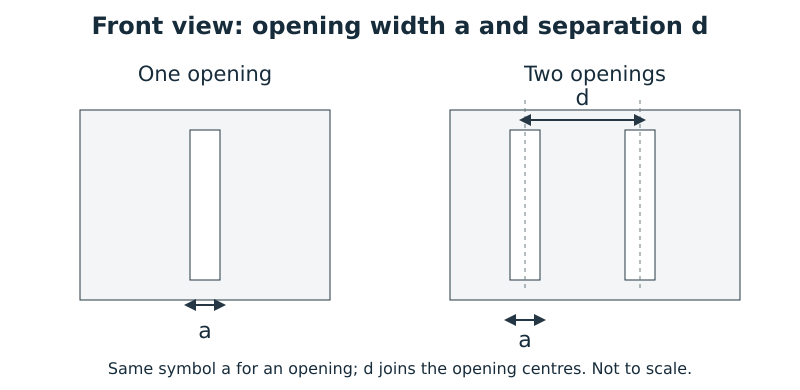
สลิตคืออะไร?
ความกว้างช่องกับระยะห่างสลิต
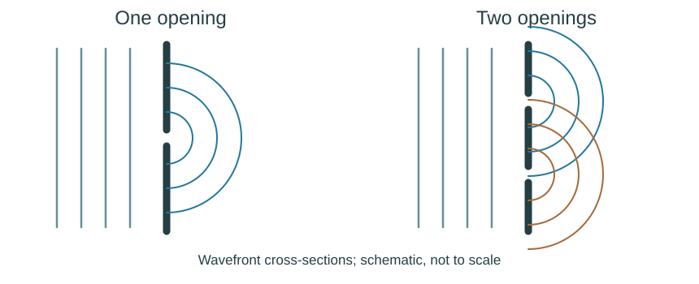
สลิตเกี่ยวกับสมบัติใดของแสง?
คำถาม 1
แผ่นหนึ่งมีช่องให้เลือกหลายช่อง จะพิจารณาว่าใช้สลิตเดี่ยวหรือสลิตคู่จากอะไร?
ดูว่าลำแสงตกผ่านบริเวณใดของแผ่นจริง ไม่ใช่นับทุกช่องที่มองเห็นบนแผ่น
ถ้าบริเวณนั้นมีช่องแคบหนึ่งช่องที่ให้แสงผ่าน เป็นสลิตเดี่ยว ถ้ามีสองช่องขนานใกล้กันที่ให้แสงผ่าน เป็นสลิตคู่
จึงต้องระบุทั้งตำแหน่งที่ฉายและจำนวนช่องที่แสงผ่าน แผ่นเดียวอาจมีหลายชุดให้เลือกใช้
คำถาม 2
ในภาพ ระยะ \(a\) และ \(d\) วัดจากตำแหน่งใดถึงตำแหน่งใด?
อ่านสัญลักษณ์: d คือระยะระหว่างกึ่งกลางสองสลิต
a และ d ต่างเป็นระยะทาง แต่ใช้ปลายลูกศรคนละตำแหน่ง ให้ชี้จุดเริ่มและจุดจบก่อนอ่านค่า
a วัดระหว่างขอบสองข้างของช่องเดียว จึงเป็นความกว้างหนึ่งช่อง; d วัดระหว่างกึ่งกลางช่องทั้งสอง จึงเป็นระยะห่างสลิต
ช่องว่างระหว่างขอบด้านในไม่ใช่ d สำหรับช่องเท่ากัน หากรู้ช่องว่างนั้น ต้องรวมความกว้างหนึ่งช่องจึงได้ระยะระหว่างกึ่งกลาง
คำถาม 3
หลังผ่านสลิตคู่ ต้องมีการแผ่ของแสงจากช่องก่อนอย่างไร จึงเกิดบริเวณที่คลื่นซ้อนทับกันได้?
ก่อนซ้อนทับได้ แสงจากสองช่องต้องเดินทางมาถึงบริเวณเดียวกันบนฉาก
การเลี้ยวเบนทำให้แสงแผ่ออกจากช่องแคบแต่ละช่อง จึงมีบริเวณที่คลื่นจากสองช่องมาพบกัน
ในบริเวณซ้อนทับ ผลรวมของคลื่นอาจเสริมหรือหักล้าง เกิดแถบสว่างและมืด จึงต้องแยกบทบาทการเลี้ยวเบนออกจากการแทรกสอด
1 ทดลองและอ่านภาพแถบแสง
เลเซอร์ฉายผ่านสลิตคู่ไปยังฉาก ภาพด้านล่างเป็นแบบจำลองสำหรับอ่านลักษณะและเปรียบเทียบตัวแปร หากทำการทดลองจริง ให้ครูควบคุมอุปกรณ์และหลีกเลี่ยงการมองเข้าลำแสงโดยตรง
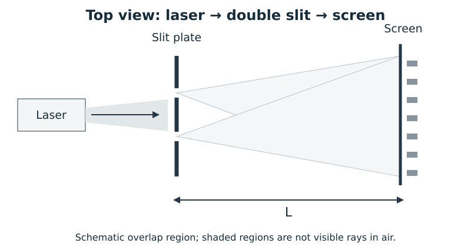
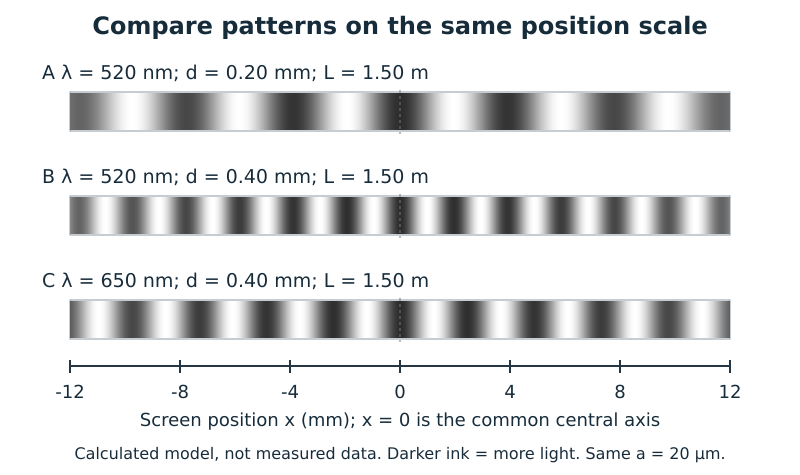
ใช้ภาพแบบจำลอง A–C ซึ่งใช้ระยะฉากและความกว้างแต่ละช่องเท่ากัน ภาพทุกแถวใช้สเกลตำแหน่งเดียวกัน ในภาพนี้เทาเข้มแทนความเข้มแสงมาก
คำถาม 4 · ก
เทียบ A กับ B: เปลี่ยนตัวแปรใด และภาพใดมีแถบสว่างอยู่ชิดกันกว่า?
ข้อมูลและสิ่งที่หา: A: d = 0.20 mm; B: d = 0.40 mm โดยใช้สีแสง ระยะฉาก และความกว้างช่องเดิม ต้องเทียบระยะห่างแถบ
เลือกสูตร: เมื่อคง λ และ L ระยะห่างแถบแปรผกผันกับ d จึงใช้สัดส่วนตัดตัวแปรที่เท่ากันออก
เขียนสูตรและจัดรูป: \(\Delta x=\lambda L/d,\quad \frac{\Delta x_B}{\Delta x_A}=\frac{d_A}{d_B}\)
แทนค่าหลังแปลงหน่วย: \(\frac{\Delta x_B}{\Delta x_A}=\frac{0.20}{0.40}=0.50\)
ตอบ: B มีแถบชิดกว่า ระยะห่างเหลือครึ่งหนึ่งของ A
ตรวจความหมาย: หน่วย mm บนและล่างเหมือนกันจึงตัดกันได้ ไม่ใช้ความสว่างของภาพแทนการวัดระยะ
คำถาม 4 · ข
เทียบ B กับ C: ภาพใดมีระยะห่างแถบมากกว่า? อธิบายด้วยความยาวคลื่น โดยไม่อ้างความเข้มของภาพ
ข้อมูลและสิ่งที่หา: B ใช้ λ = 520 nm; C ใช้ λ = 650 nm โดย d และ L เดิม ต้องเทียบระยะห่างแถบ
เลือกสูตร: สีแสงเปลี่ยนความยาวคลื่น ระยะห่างแถบแปรตรงกับ λ เมื่ออุปกรณ์อื่นเดิม
เขียนสูตรและจัดรูป: \(\frac{\Delta x_C}{\Delta x_B}=\frac{\lambda_C}{\lambda_B}\)
แทนค่าหลังแปลงหน่วย: \(\frac{\Delta x_C}{\Delta x_B}=\frac{650}{520}=1.25\)
ตอบ: C มีแถบห่างกว่า เป็น 1.25 เท่าของ B
ตรวจความหมาย: 1.25 เท่าหมายถึงเพิ่ม 25% ไม่ใช่เพิ่ม 125% และไม่ตัดสินจากภาพที่สว่างกว่า
ก่อนบันทึกรูปแต่ละกรณี ผู้ทดลองทำเครื่องหมายตำแหน่งแนวกลางบนฉากให้ตรงกัน
คำถาม 5
เหตุใดการจัดแนวนี้จึงช่วยให้เปรียบเทียบภาพได้? การเลื่อนภาพทั้งภาพแปลว่าระยะห่างแถบเปลี่ยนเสมอหรือไม่?
ใช้แนวกลางเป็นจุดอ้างอิงเดียวกัน และใช้สเกลระยะเดียวกัน เพื่อเปรียบเทียบแถบอันดับเดียวกัน
หากลวดลายเลื่อนไปทั้งภาพ แต่ระยะระหว่างแถบข้างเคียงเท่าเดิม แสดงว่าตำแหน่งอ้างอิงเปลี่ยน ไม่ใช่แถบห่างขึ้นหรือชิดลง
ต้องวัดช่องว่างระหว่างแถบ หรือวัดหลายช่วงแล้วหารจำนวนช่วง จึงจะสรุปการเปลี่ยนระยะห่างได้
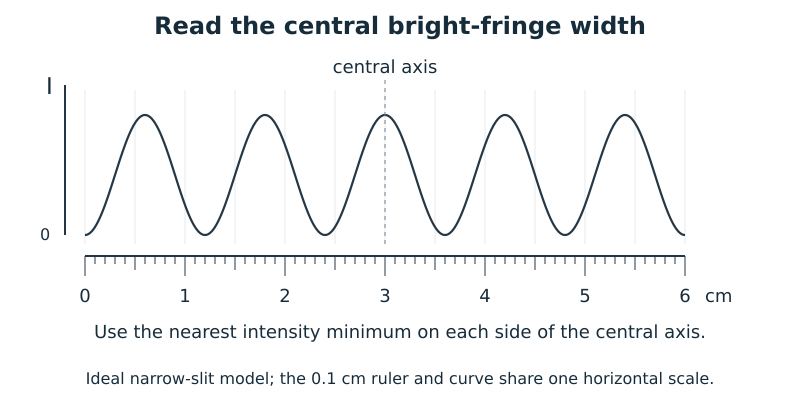
คำถาม 6
ความกว้างของแถบสว่างหนึ่งแถบควรวัดระหว่างจุดใด?
เลือกแถบสว่างที่ต้องการวัดหนึ่งแถบ แล้วหาตำแหน่งความเข้มต่ำสุดที่ขนาบแถบนั้นทั้งสองด้าน
อ่านพิกัดขอบซ้ายและขอบขวาจากไม้บรรทัดเดียวกัน ความกว้าง = พิกัดขวา − พิกัดซ้าย
ไม่วัดจากศูนย์กลางแถบถึงขอบเพียงด้านเดียว และไม่วัดคร่อมซองการเลี้ยวเบนที่บรรจุหลายแถบ
สรุปจากภาพและการทดลอง
มีผู้เสนอว่าเมื่อแสงผ่านสองช่อง ฉากต้องมีเพียงสองบริเวณสว่างที่ตรงกับช่อง
คำถาม 7
ลวดลายหลายแถบในภาพขัดกับคำอธิบายนี้ตรงไหน และการเสริม–หักล้างช่วยอธิบายบริเวณมืดได้อย่างไร?
การอธิบายว่าแสงเดินตรงจากสองช่องให้เพียงบริเวณสว่างสองแนว ยังอธิบายลวดลายหลายแถบและบริเวณมืดในส่วนซ้อนทับไม่ได้
คลื่นจากแต่ละช่องเลี้ยวเบนมาซ้อนทับ ที่เฟสตรงกันการกระจัดสนามเสริมกัน ที่เฟสตรงข้ามและแอมพลิจูดเท่ากันสนามหักล้างกัน
บริเวณมืดจึงไม่ได้เกิดเพราะไม่มีคลื่นจากช่องใดมาถึง แต่เกิดจากผลรวมสนามเป็นศูนย์ เป็นหลักฐานของการแทรกสอดแบบคลื่น
2 ผลต่างทางเดิน เฟส และแถบสว่าง–มืด
แหล่งกำเนิดอาพันธ์และเงื่อนไขที่ใช้
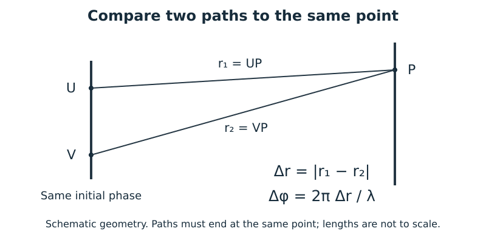
ผลต่างทางเดินของแสง
คำถาม 8
แสงมีความยาวคลื่น λ = 500 nm ที่จุด P ระยะจากแหล่งแรกถึง P ยาว 12 เท่าของ λ ส่วนอีกเส้นยาว 10 เท่าของ λ จงหาผลต่างทางเดิน โดยตอบเป็นจำนวนเท่าของความยาวคลื่น
อ่านสัญลักษณ์: λ คือความยาวคลื่นแสง
ข้อมูลและสิ่งที่หา: ระยะจากแหล่งสองแหล่งถึง P คือ 12λ และ 10λ โดย λ หมายถึงความยาวหนึ่งรอบคลื่น ต้องหาว่าทางเดินต่างกันเท่าใด
เลือกสูตร: ผลต่างทางเดินคือความยาวทางเดินที่มากกว่า ลบความยาวที่น้อยกว่า ไม่ใช่นำมาบวก
เขียนสูตรและจัดรูป: \(\Delta r=|r_1-r_2|\)
แทนค่าหลังแปลงหน่วย: \(\Delta r=|12\lambda-10\lambda|=(12-10)\lambda=2\lambda\)
ตอบ: ผลต่างทางเดินเท่ากับ 2 ความยาวคลื่น
ตรวจความหมาย: ถ้าใช้แสง λ = 500 nm เป็นตัวอย่าง ระยะสองเส้นคือ 6000 และ 5000 nm ผลต่างคือ 1000 nm ซึ่งเท่ากับ 2λ เช่นเดิม
ผลต่างทางเดินเชื่อมกับเฟส
เมื่อคลื่นเดินทางครบ 1 ความยาวคลื่น \(\lambda\) เฟสเปลี่ยนไป 1 รอบ หรือ \(2\pi\) rad
ดังนั้น ผลต่างทางเดิน \(\Delta r\) คิดเป็นจำนวนรอบเท่ากับ \(\dfrac{\Delta r}{\lambda}\)
\[\frac{\Delta\phi}{2\pi}=\frac{\Delta r}{\lambda}\quad\Rightarrow\quad\boxed{\Delta\phi=\frac{2\pi\Delta r}{\lambda}}\]สูตรนี้ให้ความต่างเฟสจากผลต่างทางเดิน สำหรับสลิตที่มีเฟสเริ่มต้นตรงกัน จึงใช้เป็นความต่างเฟสที่จุดสังเกตได้
ถ้า \(\Delta r=m\lambda\) จะได้ \(\Delta\phi=2m\pi\) rad เมื่อ \(m\) เป็นจำนวนเต็ม คลื่นจึงกลับมาเฟสตรงกัน
ตัวอย่าง 1
แหล่ง U,V เริ่มต้นเฟสตรงกัน ให้หาผลต่างทางเดิน ความต่างเฟสสะสม และเฟสเทียบรอบในแต่ละกรณี
ตัวอย่าง 1 · ก
แหล่ง U,V เริ่มเฟสตรงกัน แสงมีความยาวคลื่น 500 nm ระยะจาก U ถึง P คือ 35.20 μm และจาก V ถึง P คือ 36.45 μm จงหาผลต่างทางเดิน ความต่างเฟสสะสม และเฟสเทียบรอบ
ข้อมูลและสิ่งที่หา: สองแหล่งเริ่มเฟสตรงกัน; λ = 500 nm; UP = 35.20 μm; VP = 36.45 μm ต้องหาผลต่างทางเดินและเฟส
เลือกสูตร: หาความยาวที่คลื่นชุดหนึ่งเดินเกินอีกชุดก่อน แล้วคิดว่าต่างกันกี่รอบ หนึ่งรอบมีเฟส 2π rad
เขียนสูตรและจัดรูป: \(\Delta r=|VP-UP|,\quad \Delta\phi=2\pi\frac{\Delta r}{\lambda}\)
แทนค่าหลังแปลงหน่วย: \(\Delta r=(36.45-35.20)\times1000=1250\,\mathrm{nm},\quad \Delta\phi=2\pi\frac{1250}{500}=5\pi\)
ตอบ: Δr = 1.25 μm = 1250 nm; เฟสสะสม 5π rad; ตัด 2 รอบเต็ม (4π) เหลือ π rad จึงเฟสตรงข้าม
ตรวจความหมาย: 1250/500 = 2.5 รอบ ไม่ใช่ 2.5 rad และต้องแปลง μm เป็น nm ก่อนหาร
ตัวอย่าง 1 · ข
แหล่ง U,V เริ่มเฟสตรงกัน ในอีกกรณีหนึ่งใช้แสงความยาวคลื่น 500 nm ระยะ UP ยาว 40 เท่าของความยาวคลื่น และ VP ยาว 46 เท่า จงหาผลต่างทางเดิน ความต่างเฟสสะสม และเฟสเทียบรอบ
ข้อมูลและสิ่งที่หา: UP = 40λ; VP = 46λ; สองแหล่งเริ่มเฟสตรงกัน ต้องหาเฟสสะสมและเฟสเทียบรอบ
เลือกสูตร: ทั้งสองระยะอยู่ในหน่วยความยาวคลื่นเดียวกัน จึงลบตัวคูณแล้วใช้ 2π ต่อหนึ่งรอบ
เขียนสูตรและจัดรูป: \(\Delta r=|VP-UP|,\quad \Delta\phi=2\pi\Delta r/\lambda\)
แทนค่าหลังแปลงหน่วย: \(\Delta r=(46-40)\lambda=6\lambda,\quad \Delta\phi=2\pi(6)=12\pi\)
ตอบ: ผลต่างทางเดิน 6λ; เฟสสะสม 12π rad เท่ากับ 6 รอบเต็ม เฟสเทียบรอบเป็น 0 rad จึงตรงกัน
ตรวจความหมาย: ตัวอย่าง λ = 500 nm จะได้ทางเดิน 20000 กับ 23000 nm ต่างกัน 3000 nm; 3000/500 = 6 รอบเช่นเดิม
สองแหล่งเริ่มต้นเฟสตรงกัน ให้ \(UP=92.50\lambda\) และ \(VP=96.75\lambda\)
คำถาม 9 · ก
แหล่ง U,V เริ่มเฟสตรงกัน ระยะจาก U ถึง P เท่ากับ 92.50λ และจาก V ถึง P เท่ากับ 96.75λ โดย λ คือความยาวคลื่นเดียวกัน จงหาผลต่างทางเดินเป็นจำนวนเท่าของ λ และความต่างเฟสสะสมเป็น rad
อ่านสัญลักษณ์: λ คือความยาวคลื่นแสง
ข้อมูลและสิ่งที่หา: UP = 92.50λ และ VP = 96.75λ; เริ่มเฟสตรงกัน ต้องหา Δr และความต่างเฟสสะสม
เลือกสูตร: ลบทางเดินก่อน แล้วคูณจำนวนรอบที่ต่างกันด้วย 2π
เขียนสูตรและจัดรูป: \(\Delta r=|VP-UP|,\quad \Delta\phi=2\pi\Delta r/\lambda\)
แทนค่าหลังแปลงหน่วย: \(\Delta r=(96.75-92.50)\lambda=4.25\lambda,\quad \Delta\phi=2\pi(4.25)=8.5\pi\)
ตอบ: Δr = 4.25λ และเฟสสะสม 8.5π rad
ตรวจความหมาย: คำว่าสะสมให้เก็บทุกรอบไว้ ยังไม่ลดเหลือเฉพาะส่วนเกินรอบเต็ม
คำถาม 9 · ข
ใช้ข้อมูล UP = 92.50λ และ VP = 96.75λ ของแหล่งเริ่มเฟสตรงกันและแอมพลิจูดเท่ากัน จุด P เป็นตำแหน่งสว่างสูงสุดหรือมืดสนิทหรือไม่? อธิบายจากจำนวนรอบที่ทางเดินต่างกัน
อ่านสัญลักษณ์: λ คือความยาวคลื่นแสง
จากข้อมูล UP = 92.50λ และ VP = 96.75λ ผลต่างทางเดินคือ 4.25λ จึงใช้จำนวนรอบ 4.25 ตรวจเงื่อนไขแถบ
สว่างสูงสุดต้องต่างกันเป็นจำนวนเต็มรอบ เช่น 4 หรือ 5 รอบ; มืดสนิทต้องเป็นครึ่งจำนวนคี่ เช่น 3.5 หรือ 4.5 รอบ
4.25 ไม่ตรงทั้งสองเงื่อนไข จึงไม่ใช่ตำแหน่งสว่างสูงสุดหรือมืดสนิท เฟส 8.5π ตัด 8π เหลือ π/2 rad ไม่ใช่ 0 หรือ π
ไม่ปัด 4.25 เป็น 4 หรือ 4.5 เพราะจะเปลี่ยนตำแหน่งทางฟิสิกส์ที่โจทย์กำหนด
เงื่อนไขเกิดแถบสว่างและแถบมืด
แถบสว่าง: \(\Delta r=n\lambda\), โดย n = 0, 1, 2, … คลื่นมาถึงเฟสตรงกันและเสริมกัน
แถบมืด: \(\Delta r=(n-\tfrac12)\lambda\), โดย n = 1, 2, 3, … คลื่นมาถึงเฟสตรงข้ามและหักล้างกัน สมมติแอมพลิจูดเท่ากันเพื่อให้มืดสนิท
นับอันดับแถบอย่างไร?
คำถาม 10
จุดที่ห่างจากสองสลิตเท่ากันอยู่บนแถบชนิดใด อันดับเท่าใด?
จุดที่ห่างจากสองสลิตเท่ากันมี r₁ = r₂ เมื่อลบกันได้ Δr = 0
สำหรับแหล่งเริ่มเฟสตรงกัน เงื่อนไขสว่างคือ Δr = nλ แทน Δr = 0 จะได้ n = 0
จึงเป็นสว่างกลาง อันดับ 0 ไม่ใช่มืด เพราะคลื่นมาถึงเฟสเดียวกันและเสริมกัน
คำถาม 11
ถ้า \(\Delta r=1.5\lambda\) เป็นแถบใด อันดับเท่าใด?
อ่านสัญลักษณ์: λ คือความยาวคลื่นแสง; Δr คือขนาดผลต่างความยาวทางเดินสองเส้น
โจทย์ให้ผลต่างทางเดิน 1.5λ จึงหารด้วย λ ได้จำนวนรอบที่ต่างกัน 1.5
จำนวนนี้ไม่เป็นจำนวนเต็ม จึงไม่ใช่สว่าง แต่ตรงเงื่อนไขมืด Δr/λ = n − 0.5
แทน 1.5 = n − 0.5 แล้วย้ายข้างได้ n = 1.5 + 0.5 = 2 จึงเป็นมืดอันดับ 2
อันดับแถบเป็นจำนวนเต็ม 2 ส่วน 1.5 เป็นจำนวนรอบที่ต่างกัน อย่าเรียกมืดอันดับ 1.5
คำถาม 12
ถ้า \(\Delta r=1.2\lambda\) จะเป็นตำแหน่งสว่างสุดหรือมืดสนิทพอดีหรือไม่?
อ่านสัญลักษณ์: λ คือความยาวคลื่นแสง; Δr คือขนาดผลต่างความยาวทางเดินสองเส้น
คำนวณจำนวนรอบที่ทางเดินต่างกัน: Δr/λ = 1.2
สว่างสูงสุดต้องเป็น 0,1,2,… ส่วนมืดสนิทต้องเป็น 0.5,1.5,2.5,… สำหรับแหล่งเริ่มเฟสตรงกันและแอมพลิจูดเท่ากัน
1.2 ไม่อยู่ในสองชุดนี้ จึงเป็นจุดระหว่างตำแหน่งสุดสว่างกับมืดสนิท ไม่สรุปว่าไม่มีแสง และไม่ปัดไปเป็นอันดับใกล้ที่สุด
ตัวอย่าง 2
ใช้แสง \(\lambda=480\,\mathrm{nm}\) จากสองแหล่งที่เริ่มต้นเฟสตรงกัน ระบุชนิดและอันดับแถบที่จุด P
ตัวอย่าง 2 · ก
ใช้แสงความยาวคลื่น 480 nm จากแหล่งเริ่มเฟสตรงกัน ที่ P ทางเดินสองเส้นต่างกัน 1440 nm จงระบุชนิดและอันดับแถบ
ข้อมูลและสิ่งที่หา: แสง λ = 480 nm; ผลต่างทางเดิน Δr = 1440 nm ต้องระบุชนิดและอันดับแถบเมื่อแหล่งเริ่มเฟสตรงกัน
เลือกสูตร: เมื่อรู้ผลต่างทางเดิน ให้หารด้วยความยาวคลื่นเพื่อแยกจำนวนเต็มออกจากครึ่งจำนวนคี่
เขียนสูตรและจัดรูป: \(R=\Delta r/\lambda\)
แทนค่าหลังแปลงหน่วย: \(R=\frac{1440}{480}=3\)
ตอบ: R = 3 เป็นจำนวนเต็ม จึงเป็นสว่างอันดับ 3
ตรวจความหมาย: nm หาร nm ไม่มีหน่วย ผลลัพธ์บอกจำนวนรอบ ไม่ใช่ระยะเป็น nm
ตัวอย่าง 2 · ข
ใช้แสงความยาวคลื่น 480 nm จากแหล่งเริ่มเฟสตรงกัน อีกจุดหนึ่งมีผลต่างทางเดิน 2160 nm จงระบุชนิดและอันดับแถบ
ข้อมูลและสิ่งที่หา: แสง λ = 480 nm; ผลต่างทางเดิน Δr = 2160 nm ต้องระบุชนิดและอันดับแถบเมื่อแหล่งเริ่มเฟสตรงกัน
เลือกสูตร: เมื่อรู้ผลต่างทางเดิน ให้หารด้วยความยาวคลื่นเพื่อแยกจำนวนเต็มออกจากครึ่งจำนวนคี่
เขียนสูตรและจัดรูป: \(R=\Delta r/\lambda\)
แทนค่าหลังแปลงหน่วย: \(R=\frac{2160}{480}=4.5\)
ตอบ: R = 4.5 = n − 0.5 จึง n = 5 เป็นมืดอันดับ 5
ตรวจความหมาย: nm หาร nm ไม่มีหน่วย ผลลัพธ์บอกจำนวนรอบ ไม่ใช่ระยะเป็น nm
คำถาม 13
แหล่ง U,V เริ่มเฟสตรงกัน ระยะ UP = (k+2)λ และ VP = (k+6)λ โดย λ คือความยาวคลื่น และ k เป็นจำนวนเต็มไม่ลบที่ยังไม่ทราบค่า จงระบุชนิดและอันดับแถบที่ P จำเป็นต้องทราบค่า k ก่อนหรือไม่?
อ่านสัญลักษณ์: λ คือความยาวคลื่นแสง
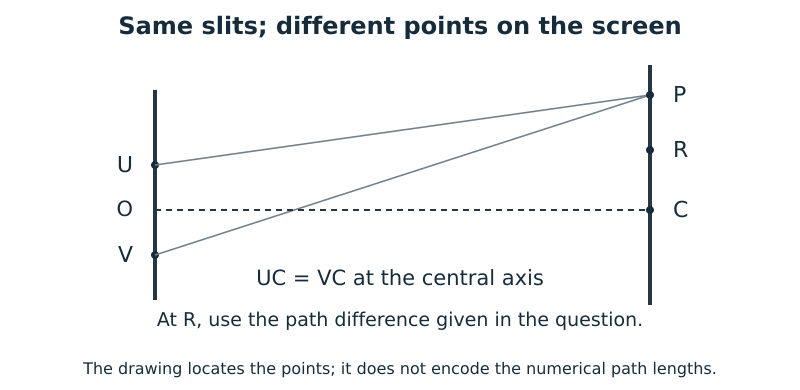
ข้อมูลและสิ่งที่หา: ทางเดิน UP = (k+2)λ และ VP = (k+6)λ โดย k เป็นจำนวนเต็ม ต้องหาชนิดและอันดับแถบ
เลือกสูตร: ชนิดแถบขึ้นกับผลต่างทางเดิน ไม่ขึ้นกับระยะทางแต่ละเส้นแยกกัน จึงลบวงเล็บก่อน
เขียนสูตรและจัดรูป: \(\Delta r=|VP-UP|\)
แทนค่าหลังแปลงหน่วย: \(\Delta r=|(k+6)-(k+2)|\lambda=|k+6-k-2|\lambda=4\lambda\)
ตอบ: ผลต่าง 4λ เป็นจำนวนเต็มรอบ จึงสว่างอันดับ 4 ไม่จำเป็นต้องรู้ k
ตรวจความหมาย: เช่น k = 10 จะได้ทางเดิน 12λ และ 16λ ต่างกัน 4λ เหมือนเดิม k จึงเป็นตัวแทนส่วนของระยะที่มีร่วมกัน
3 จากทางเดินสู่มุมและตำแหน่งบนฉาก
ใช้ภาพเดียวระบุจุด O,C,P และระยะ d,L,x ให้ตรงกันก่อนเลือกสมการ
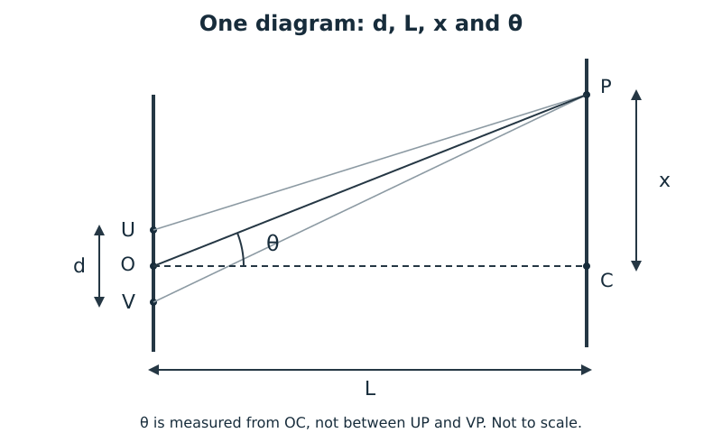
ความหมายของตัวแปรและมุม
สมการหาตำแหน่งในรูปมุม
เมื่อฉากอยู่ไกลจากสลิตมากเมื่อเทียบกับ d ใช้ \(\Delta r\approx d\sin\theta\)
สว่าง: \(d\sin\theta=n\lambda\) (n = 0, 1, 2, …)
มืด: \(d\sin\theta=(n-\tfrac12)\lambda\) (n = 1, 2, 3, …)
กรณีมุมเล็ก: ใช้ระยะบนฉาก
ถ้ามุมเล็ก ใช้ \(\sin\theta\approx\tan\theta=x/L\) หนังสือใช้เกณฑ์ประมาณ \(\theta<10^\circ\)
สว่าง: \(x_n\approx n\lambda L/d\)
มืด: \(x_n\approx(n-\tfrac12)\lambda L/d\)
ใช้เมื่อ L มากกว่า d มาก และ x น้อยกว่า L มาก; ถ้ามุมไม่เล็ก ให้ใช้รูป sin แทนการแทน x/L
คำถาม 14
มุม θ วัดจากเส้นใดถึงเส้นใดในภาพ และ x วัดบนฉากจากจุดใด?
อ่านสัญลักษณ์: θ คือมุมจากแนวกลางไปยังจุดสังเกต; x คือตำแหน่งบนฉากวัดจากแนวกลาง หากลูกศรในรูปกำกับต่างออกไปให้ยึดนิยามของลูกศรนั้น
เริ่มที่ O ซึ่งเป็นกึ่งกลางระหว่างสลิต เส้น OC คือแนวกลางตรงไปยังฉาก และ OP ชี้ไปยังจุดที่ต้องการดู
มุม θ วัดจาก OC ไป OP โดยจุดยอดอยู่ที่ O ส่วน x คือระยะบนฉากจาก C ถึง P; L คือระยะจาก O ถึง C
จึงได้ tanθ = x/L จากสามเหลี่ยม OCP ไม่ใช่มุมระหว่างรังสี UP กับ VP และไม่ใช้ d แทนระยะฉาก
คำถาม 15
โจทย์ให้มุม 20° ควรเริ่มจากสมการรูป sinθ หรือแทนด้วย x/L ทันที?
อ่านสัญลักษณ์: L คือระยะจากสลิตถึงฉาก; θ คือมุมจากแนวกลางไปยังจุดสังเกต; x คือตำแหน่งบนฉากวัดจากแนวกลาง หากลูกศรในรูปกำกับต่างออกไปให้ยึดนิยามของลูกศรนั้น
โจทย์ให้มุม 20° จึงใช้ค่ามุมโดยตรง ไม่ได้ให้ระยะบนฉากที่ต้องเปลี่ยนเป็นอัตราส่วน x/L
สำหรับฉากไกล ใช้ Δr ≈ d sinθ ร่วมกับเงื่อนไขสว่างหรือมืด ส่วนการแทน sinθ ด้วย tanθ = x/L ต้องมีเงื่อนไขมุมเล็กเพิ่ม
20° ไม่ควรถูกแทนด้วยมุมเล็กโดยไม่ตรวจ: sin20° ≈ 0.342 แต่ tan20° ≈ 0.364 ต่างกันประมาณ 6.4% จึงเริ่มจากสูตร sinθ
คำถาม 16
ระยะจากแถบสว่างกลางถึงแถบสว่างอันดับ 3 ต่างจากระยะระหว่างแถบสว่างติดกันอย่างไร?
Δx คือระยะระหว่างศูนย์กลางแถบสว่างที่ติดกัน ส่วน x₃ คือระยะจากสว่างกลางไปสว่างอันดับ 3
นับเส้นทางจากอันดับ 0 → 1 → 2 → 3 มี 3 ช่วง ดังนั้น x₃ = 3Δx ในบริเวณมุมเล็ก
เช่น ถ้าแถบติดกันห่าง 2 mm ระยะถึงอันดับ 3 จะเป็น 3 × 2 = 6 mm ไม่ใช่ 2 mm
ตัวอย่าง 3
แสง \(\lambda=520\,\mathrm{nm}\) ผ่านสลิตคู่ \(d=13.0\,\mu\mathrm m\) ใช้สมการมุมในกรณีฉากไกล พิจารณาจุด P ทีละกรณี โดยให้ค่า sine มาแล้ว
ตัวอย่าง 3 · ก
แสงความยาวคลื่น 520 nm ผ่านสลิตคู่ที่กึ่งกลางช่องห่าง 13.0 μm สำหรับจุด P ในกรณีฉากไกล ให้ sinθ = 0.0800 โดย θ วัดจากแนวกลาง จงระบุชนิดและอันดับแถบ
อ่านสัญลักษณ์: θ คือมุมจากแนวกลางไปยังจุดสังเกต
ข้อมูลและสิ่งที่หา: แสง λ = 520 nm = 520 × 10⁻⁹ m; d = 13.0 μm = 13.0 × 10⁻⁶ m; sinθ = 0.0800 ต้องจำแนกแถบ
เลือกสูตร: ให้มุมในรูป sine จึงใช้ d sinθ หาผลต่างทางเดินก่อนเทียบกับ λ ไม่จำเป็นต้องหา θ ย้อนกลับ
เขียนสูตรและจัดรูป: \(R=\frac{d\sin\theta}{\lambda}\)
แทนค่าหลังแปลงหน่วย: \(R=\frac{(13.0\times10^{-6})(0.08)}{520\times10^{-9}}=2\)
ตอบ: R = 2 เป็นจำนวนเต็ม จึงสว่างอันดับ 2
ตรวจความหมาย: ใช้ความยาวเป็น m ทั้งสองตัว ค่า R จึงไม่มีหน่วย อย่านับครึ่งจำนวนคี่เป็นอันดับแถบตรง ๆ
ตัวอย่าง 3 · ข
ใช้อุปกรณ์เดิม: ความยาวคลื่น 520 nm และระยะห่างสลิต 13.0 μm ที่อีกจุดให้ sinθ = 0.1000 จงระบุชนิดและอันดับแถบ
อ่านสัญลักษณ์: θ คือมุมจากแนวกลางไปยังจุดสังเกต
ข้อมูลและสิ่งที่หา: แสง λ = 520 nm = 520 × 10⁻⁹ m; d = 13.0 μm = 13.0 × 10⁻⁶ m; sinθ = 0.1000 ต้องจำแนกแถบ
เลือกสูตร: ให้มุมในรูป sine จึงใช้ d sinθ หาผลต่างทางเดินก่อนเทียบกับ λ ไม่จำเป็นต้องหา θ ย้อนกลับ
เขียนสูตรและจัดรูป: \(R=\frac{d\sin\theta}{\lambda}\)
แทนค่าหลังแปลงหน่วย: \(R=\frac{(13.0\times10^{-6})(0.1)}{520\times10^{-9}}=2.5\)
ตอบ: R = 2.5 = n − 0.5 จึง n = 3 เป็นมืดอันดับ 3
ตรวจความหมาย: ใช้ความยาวเป็น m ทั้งสองตัว ค่า R จึงไม่มีหน่วย อย่านับครึ่งจำนวนคี่เป็นอันดับแถบตรง ๆ
ตัวอย่าง 4
แสง \(\lambda=640\,\mathrm{nm}\), \(d=0.160\,\mathrm{mm}\) และ \(L=1.50\,\mathrm m\) จุด P อยู่ด้านเดียวกับที่รูปแสดง ระบุชนิดและอันดับแถบในแต่ละกรณี พร้อมตรวจ \(x/L\)
ตัวอย่าง 4 · ก
แสงความยาวคลื่น 640 nm ผ่านสลิตห่าง 0.160 mm ฉากห่าง 1.50 m จุด P อยู่ห่างแนวกลาง 18.0 mm จงตรวจว่าใช้มุมเล็กได้หรือไม่ แล้วระบุชนิดและอันดับแถบ
ข้อมูลและสิ่งที่หา: λ = 640 nm = 640 × 10⁻⁹ m; d = 0.160 mm = 0.160 × 10⁻³ m; L = 1.50 m; x = 18.0 mm = 18 × 10⁻³ m
เลือกสูตร: ตรวจ x/L = 0.0120 ซึ่งเล็ก จึงใช้ผลต่างทางเดินประมาณ dx/L แล้วหารด้วย λ เพื่อจำแนกแถบ
เขียนสูตรและจัดรูป: \(R=\frac{dx}{\lambda L}\)
แทนค่าหลังแปลงหน่วย: \(R=\frac{(0.160\times10^{-3})(18\times10^{-3})}{(640\times10^{-9})(1.50)}=3\)
ตอบ: R = 3 = n จึงสว่างอันดับ 3
ตรวจความหมาย: x วัดจากแนวกลางถึงจุด P ไม่ใช่ช่องว่างระหว่างสองแถบติดกัน
ตัวอย่าง 4 · ข
ใช้แสง 640 nm สลิตห่าง 0.160 mm และฉากห่าง 1.50 m จุดอีกจุดหนึ่งห่างแนวกลาง 21.0 mm จงตรวจมุมเล็กและระบุชนิดกับอันดับแถบ
ข้อมูลและสิ่งที่หา: λ = 640 nm = 640 × 10⁻⁹ m; d = 0.160 mm = 0.160 × 10⁻³ m; L = 1.50 m; x = 21.0 mm = 21 × 10⁻³ m
เลือกสูตร: ตรวจ x/L = 0.0140 ซึ่งเล็ก จึงใช้ผลต่างทางเดินประมาณ dx/L แล้วหารด้วย λ เพื่อจำแนกแถบ
เขียนสูตรและจัดรูป: \(R=\frac{dx}{\lambda L}\)
แทนค่าหลังแปลงหน่วย: \(R=\frac{(0.160\times10^{-3})(21\times10^{-3})}{(640\times10^{-9})(1.50)}=3.5\)
ตอบ: R = 3.5 = n − 0.5 จึง n = 4 เป็นมืดอันดับ 4
ตรวจความหมาย: x วัดจากแนวกลางถึงจุด P ไม่ใช่ช่องว่างระหว่างสองแถบติดกัน
4 การคำนวณตำแหน่งและระยะห่างแถบ
ระยะห่างระหว่างแถบที่ติดกัน
ข้อถัดไปใช้แสงอาพันธ์ที่เริ่มเฟสตรงกัน แสดงการแปลงหน่วยและสมการที่เลือกในพื้นที่ของแต่ละข้อ
คำถาม 17
ใช้แสง 600 nm, d = 0.20 mm, L = 1.0 m หาระยะจากแนวกลางถึงแถบสว่างอันดับ 3
อ่านสัญลักษณ์: d คือระยะระหว่างกึ่งกลางสองสลิต; L คือระยะจากสลิตถึงฉาก
ข้อมูลและสิ่งที่หา: แสงมีความยาวคลื่น λ = 600 nm = 600 × 10⁻⁹ m; สลิตห่าง d = 0.2 mm = 0.2 × 10⁻³ m; ฉากห่าง L = 1 m ต้องหาระยะจากแนวกลางถึงแถบสว่างอันดับ 3
เลือกสูตร: โจทย์ถามตำแหน่งแถบสว่าง วัดจากแนวกลาง และให้ใช้มุมเล็ก จึงใช้ตัวคูณ n = 3 ไม่ใช่สูตรระยะห่างแถบโดยไม่คิดอันดับ
เขียนสูตรและจัดรูป: \(x=n\frac{\lambda L}{d}\)
แทนค่าหลังแปลงหน่วย: \(x=3\frac{(600\times10^{-9})(1)}{0.2\times10^{-3}}=0.009\,\mathrm m\)
ตอบ: 9 mm จากแนวกลาง (ใช้ 1 m = 1000 mm)
ตรวจความหมาย: แถบสว่างกลางเป็นอันดับ 0; อันดับที่ถามนับออกจากแนวกลาง ระยะที่ตอบเป็นขนาด ไม่ได้ระบุด้านซ้ายหรือขวา
คำถาม 18
ใช้แสงความยาวคลื่น 600 nm สลิตห่าง 0.20 mm และฉากห่าง 1.0 m ให้ใช้มุมเล็ก จงหาระยะจากแนวกลางถึงแถบมืดอันดับ 2
ข้อมูลและสิ่งที่หา: แสงมีความยาวคลื่น λ = 600 nm = 600 × 10⁻⁹ m; สลิตห่าง d = 0.2 mm = 0.2 × 10⁻³ m; ฉากห่าง L = 1 m ต้องหาระยะจากแนวกลางถึงแถบมืดอันดับ 2
เลือกสูตร: โจทย์ถามตำแหน่งแถบมืด วัดจากแนวกลาง และให้ใช้มุมเล็ก จึงใช้ตัวคูณ n − 1/2 = 1.5 ไม่ใช่สูตรระยะห่างแถบโดยไม่คิดอันดับ
เขียนสูตรและจัดรูป: \(x=(n-\tfrac12)\frac{\lambda L}{d}\)
แทนค่าหลังแปลงหน่วย: \(x=1.5\frac{(600\times10^{-9})(1)}{0.2\times10^{-3}}=0.0045\,\mathrm m\)
ตอบ: 4.5 mm จากแนวกลาง (ใช้ 1 m = 1000 mm)
ตรวจความหมาย: แถบมืดแรกอยู่ครึ่งช่วงจากแนวกลาง; การนับมืดเริ่ม n = 1 ระยะที่ตอบเป็นขนาด ไม่ได้ระบุด้านซ้ายหรือขวา
คำถาม 19
ศูนย์กลางแถบสว่าง 6 แถบเรียงติดกัน แถบแรกถึงแถบที่ 6 ห่าง 15 mm ระยะห่างแถบสว่างติดกันเป็นเท่าใด?
ข้อมูลและสิ่งที่หา: ศูนย์กลางสว่าง 6 ตำแหน่งที่ติดกัน แรกถึงสุดท้ายยาว 15 mm ต้องหาระยะต่อช่วง
เลือกสูตร: ช่องว่างอยู่ระหว่างศูนย์กลางแต่ละคู่ 6 ตำแหน่งจึงมี 5 ช่วง
เขียนสูตรและจัดรูป: \(\Delta x=\frac{\text{total span}}{N-1}\)
แทนค่าหลังแปลงหน่วย: \(\Delta x=\frac{15}{6-1}=3.0\,\mathrm{mm}\)
ตอบ: แถบสว่างติดกันห่าง 3.0 mm
ตรวจความหมาย: ตรวจกลับ: 5 × 3.0 = 15 mm; ถ้าหาร 6 จะนับเกินหนึ่งช่อง
คำถาม 20
สลิตห่างกัน 0.20 mm ฉากห่าง 1.0 m แถบสว่างติดกันห่าง 2.5 mm จงหาความยาวคลื่นเป็น nm
ข้อมูลและสิ่งที่หา: d = 0.20 mm = 0.20 × 10⁻³ m; L = 1.0 m; Δx = 2.5 mm = 2.5 × 10⁻³ m ต้องหา λ เป็น nm
เลือกสูตร: โจทย์ให้ระยะห่างแถบติดกัน ไม่ใช่ตำแหน่งอันดับใด จึงเริ่มจากสูตร Δx แล้วจัดให้ λ อยู่ตัวเดียว
เขียนสูตรและจัดรูป: \(\Delta x=\frac{\lambda L}{d}\Rightarrow\lambda=\frac{d\Delta x}{L}\)
แทนค่าหลังแปลงหน่วย: \(\lambda=\frac{(0.20\times10^{-3})(2.5\times10^{-3})}{1.0}=5.0\times10^{-7}\,\mathrm m\)
ตอบ: λ = 500 nm เพราะ 5.0 × 10⁻⁷ m × 10⁹ nm/m = 500 nm
ตรวจความหมาย: ไม่มีตัวคูณอันดับ n เพราะข้อมูลเป็นหนึ่งช่วงแถบติดกันอยู่แล้ว
5 ใช้สมการอธิบายการเปลี่ยนแปลง
ความสัมพันธ์ของตัวแปร
คำถาม 21
ในการทดลองสลิตคู่ เปลี่ยนแสงจากความยาวคลื่น 450 nm เป็น 600 nm โดยคงระยะห่างสลิต d และระยะฉาก L เท่าเดิม ระยะห่างแถบสว่างติดกันเป็นกี่เท่าของเดิม?
อ่านสัญลักษณ์: d คือระยะระหว่างกึ่งกลางสองสลิต; L คือระยะจากสลิตถึงฉาก
ข้อมูลและสิ่งที่หา: เปลี่ยน λ จาก 450 nm เป็น 600 nm โดย d และ L เดิม ต้องหาอัตราส่วนระยะห่างใหม่ต่อเดิม
เลือกสูตร: ใช้สัดส่วนของสูตร Δx = λL/d เพื่อให้ L และ d ที่คงเดิมตัดกัน
เขียนสูตรและจัดรูป: \(\frac{\Delta x_2}{\Delta x_1}=\frac{\lambda_2}{\lambda_1}\)
แทนค่าหลังแปลงหน่วย: \(\frac{\Delta x_2}{\Delta x_1}=\frac{600}{450}=\frac43\)
ตอบ: ระยะห่างใหม่เป็น 4/3 เท่าของเดิม หรือประมาณ 1.33 เท่า
ตรวจความหมาย: ตัวอย่าง ถ้าของเดิมห่าง 3.0 mm ของใหม่จะห่าง 4.0 mm ไม่ต้องรู้ d และ L เป็นตัวเลข
คำถาม 22
ใช้แสงเดิม เพิ่ม L เป็น 2 เท่า และเพิ่ม d เป็น 2 เท่าพร้อมกัน ระยะห่างแถบเปลี่ยนอย่างไร?
อ่านสัญลักษณ์: d คือระยะระหว่างกึ่งกลางสองสลิต; L คือระยะจากสลิตถึงฉาก
ข้อมูลและสิ่งที่หา: λ เดิม; ระยะฉากใหม่ L₂ = 2L₁ และระยะสลิตใหม่ d₂ = 2d₁ ต้องเทียบระยะห่างแถบ
เลือกสูตร: ทั้ง L และ d เปลี่ยนพร้อมกัน ต้องใส่ผลของทั้งสองตัวในอัตราส่วน ไม่ดูตัวใดตัวหนึ่ง
เขียนสูตรและจัดรูป: \(\frac{\Delta x_2}{\Delta x_1}=\frac{L_2}{L_1}\frac{d_1}{d_2}\)
แทนค่าหลังแปลงหน่วย: \(\frac{\Delta x_2}{\Delta x_1}=2\times\frac12=1\)
ตอบ: ระยะห่างแถบเท่าเดิม ผลจากเพิ่ม L ถูกหักล้างด้วยผลจากเพิ่ม d
ตรวจความหมาย: เช่น แถบเดิมห่าง 2 mm จะยังห่าง 2 mm ไม่ได้เพิ่มเป็น 4 mm
คำถาม 23
ใช้สีแสง d และ L เดิม แต่ทำให้แหล่งกำเนิดสว่างขึ้น ระยะห่างแถบเปลี่ยนหรือไม่?
อ่านสัญลักษณ์: d คือระยะระหว่างกึ่งกลางสองสลิต; L คือระยะจากสลิตถึงฉาก
แยกความเข้มของแหล่งกำเนิดออกจากความยาวคลื่น: ทำให้สว่างขึ้นโดยใช้สีเดิมไม่ได้ทำให้ λ เปลี่ยน
ตำแหน่งและระยะห่างแถบในแบบจำลองนี้ขึ้นกับ λ, d, L ซึ่งโจทย์คงไว้ทั้งหมด จึงมีตำแหน่งเดิม
แถบสว่างมีความเข้มเพิ่มขึ้น แต่ไม่ได้ห่างขึ้นหรือชิดลง สมมติให้รูปแบบการฉายและสัดส่วนความเข้มจากสองช่องเดิม
U,V สมมาตรกับแนวกลาง OC และเริ่มต้นเฟสตรงกัน ที่ R ให้ \(|UR-VR|=1.5\lambda\)
คำถาม 24 · ก
แหล่ง U,V เริ่มเฟสตรงกันและสมมาตรกับแนวกลาง OC จุด C อยู่บนแนวกลาง ส่วน R มีผลต่างระยะจากสองช่องเท่ากับ 1.5λ จงบอกชนิดและอันดับแถบที่ C และ R
อ่านสัญลักษณ์: λ คือความยาวคลื่นแสง
อ่านรูป: C อยู่บนแนวกลาง จึงห่างจากสองช่องเท่ากัน ส่วน R มีผลต่างทางเดิน 1.5λ
ที่ C: Δr = 0 = 0λ ตรงเงื่อนไขสว่าง nλ เมื่อ n = 0 จึงเป็นสว่างกลาง
ที่ R: 1.5λ = (n − 0.5)λ จึง n = 2 เป็นมืดอันดับ 2 ต้องจำแนกจากผลต่างทางเดิน ไม่ใช้ความยาวเส้นทางเส้นเดียว
คำถาม 24 · ข
คงความยาวคลื่น λ เดิม แต่เพิ่มระยะฉากเป็น 1.5 เท่าและเพิ่มระยะห่างสลิตเป็น 3 เท่าของเดิมพร้อมกัน ระยะห่างแถบติดกันใหม่เป็นกี่เท่าของเดิม?
อ่านสัญลักษณ์: λ คือความยาวคลื่นแสง
ข้อมูลและสิ่งที่หา: λ เดิม; L₂ = 1.5L₁ และ d₂ = 3d₁ ต้องหาระยะห่างใหม่เทียบเดิม
เลือกสูตร: ใช้สูตรระยะห่างแถบ Δx = λL/d แล้วเทียบอัตราส่วนเพื่อรวมผลสองตัวแปร
เขียนสูตรและจัดรูป: \(\frac{\Delta x_2}{\Delta x_1}=\frac{L_2}{L_1}\frac{d_1}{d_2}\)
แทนค่าหลังแปลงหน่วย: \(\frac{\Delta x_2}{\Delta x_1}=1.5\times\frac13=0.5\)
ตอบ: แถบติดกันห่างครึ่งหนึ่งของเดิม
ตรวจความหมาย: เช่น ของเดิม 4 mm จะเหลือ 2 mm การเพิ่ม L อย่างเดียวกับการเพิ่ม d พร้อมกันให้ผลต่างกัน
การคำนวณตำแหน่งแถบในใบนี้ใช้แบบจำลองสลิตคู่ในเงื่อนไขที่ระบุ ภาพผลทดลองจริงอาจมีความเข้มลดลงด้านข้าง เพราะช่องมีความกว้าง รายละเอียดการเลี้ยวเบนของสลิตเดี่ยวเรียนต่อใน 10.3
6 อ่านภาพและคำนวณตำแหน่งแถบ
อ่านปลายระยะและขีดสเกลให้ชัดก่อนคำนวณ ทุกข้อใช้โจทย์และภาพที่จัดทำใหม่
คำถาม 25
แสง \(\lambda=460\,\mathrm{nm}\) ผ่านสลิตคู่ \(d=0.230\,\mathrm{mm}\) ฉากห่าง \(L=1.20\,\mathrm m\) ให้มุมเล็ก หาตำแหน่งแถบสว่างอันดับ 2 วัดจากแนวกลาง เป็น mm
อ่านสัญลักษณ์: λ คือความยาวคลื่นแสง; d คือระยะระหว่างกึ่งกลางสองสลิต; L คือระยะจากสลิตถึงฉาก
ข้อมูลและสิ่งที่หา: แสงมีความยาวคลื่น λ = 460 nm = 460 × 10⁻⁹ m; สลิตห่าง d = 0.23 mm = 0.23 × 10⁻³ m; ฉากห่าง L = 1.2 m ต้องหาระยะจากแนวกลางถึงแถบสว่างอันดับ 2
เลือกสูตร: โจทย์ถามตำแหน่งแถบสว่าง วัดจากแนวกลาง และให้ใช้มุมเล็ก จึงใช้ตัวคูณ n = 2 ไม่ใช่สูตรระยะห่างแถบโดยไม่คิดอันดับ
เขียนสูตรและจัดรูป: \(x=n\frac{\lambda L}{d}\)
แทนค่าหลังแปลงหน่วย: \(x=2\frac{(460\times10^{-9})(1.2)}{0.23\times10^{-3}}=0.0048\,\mathrm m\)
ตอบ: 4.8 mm จากแนวกลาง (ใช้ 1 m = 1000 mm)
ตรวจความหมาย: แถบสว่างกลางเป็นอันดับ 0; อันดับที่ถามนับออกจากแนวกลาง ระยะที่ตอบเป็นขนาด ไม่ได้ระบุด้านซ้ายหรือขวา
คำถาม 26 · ก
ใช้ \(\lambda=540\,\mathrm{nm}\), \(d=0.180\,\mathrm{mm}\) และ \(L=1.60\,\mathrm m\) ให้มุมเล็ก เส้นในรูปแทนศูนย์กลางแถบสว่าง โดย C เป็นแถบกลาง ทุกข้อย่อยเทียบกับสภาพเริ่มต้นนี้ หาระยะ x ที่กำกับในรูป เป็น mm ระวังจำนวนช่วง
อ่านสัญลักษณ์: λ คือความยาวคลื่นแสง; d คือระยะระหว่างกึ่งกลางสองสลิต; L คือระยะจากสลิตถึงฉาก; x คือตำแหน่งบนฉากวัดจากแนวกลาง หากลูกศรในรูปกำกับต่างออกไปให้ยึดนิยามของลูกศรนั้น
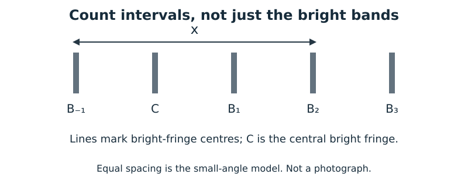
ข้อมูลและสิ่งที่หา: λ = 540 nm = 540 × 10⁻⁹ m; d = 0.180 mm = 0.180 × 10⁻³ m; L = 1.60 m; ลูกศร x คร่อม 3 ช่วง
เลือกสูตร: หา Δx ของแถบติดกันหนึ่งคู่ก่อน แล้วคูณจำนวนช่องว่างที่ลูกศรคร่อม ไม่ใช่นับเส้นเป็นจำนวนช่วง
เขียนสูตรและจัดรูป: \(\Delta x=\lambda L/d,\quad x=3\Delta x\)
แทนค่าหลังแปลงหน่วย: \(\Delta x=\frac{(540\times10^{-9})(1.60)}{0.180\times10^{-3}}=0.00480\,\mathrm m=4.80\,\mathrm{mm}\)
ตอบ: x = 3 × 4.80 = 14.4 mm
ตรวจความหมาย: ใช้ d เป็นระยะระหว่างช่องสลิต ไม่ใช่ความกว้างช่อง a
คำถาม 26 · ข
ใช้แสง 540 nm และสลิตห่าง 0.180 mm ระยะ x ในรูปคร่อมจำนวนช่วงเดิม เดิมฉากห่าง 1.60 m หากย้ายฉากเป็น 2.40 m ระยะ x ใหม่เป็นเท่าใด? ให้ใช้มุมเล็ก
อ่านสัญลักษณ์: x คือตำแหน่งบนฉากวัดจากแนวกลาง หากลูกศรในรูปกำกับต่างออกไปให้ยึดนิยามของลูกศรนั้น
ข้อมูลและสิ่งที่หา: สภาพเริ่มต้น x₁ = 14.4 mm ที่ L₁ = 1.60 m; ย้ายฉากเป็น L₂ = 2.40 m โดย λ,d และจำนวนช่วงเดิม
เลือกสูตร: เมื่อสีแสง สลิต และอันดับที่วัดเดิม ระยะบนฉากแปรตรงกับ L
เขียนสูตรและจัดรูป: \(\frac{x_2}{x_1}=\frac{L_2}{L_1}\Rightarrow x_2=x_1\frac{L_2}{L_1}\)
แทนค่าหลังแปลงหน่วย: \(x_2=14.4\frac{2.40}{1.60}=14.4(1.5)=21.6\,\mathrm{mm}\)
ตอบ: ระยะ x ใหม่เป็น 21.6 mm
ตรวจความหมาย: เพิ่ม L เป็น 1.5 เท่า ระยะที่วัดต้องเพิ่มเป็น 1.5 เท่าด้วย และข้อย่อยนี้อ้างสภาพเริ่มต้น ไม่ใช่เปลี่ยนตัวแปรอื่นต่อเนื่อง
คำถาม 26 · ค
อ้างสภาพเริ่มต้นของข้อ 26: แสง 540 nm สลิตห่าง 0.180 mm ฉากห่าง 1.60 m ถ้าเพิ่มความเข้มแสงที่ตกสลิตอย่างเดียว ระยะ x ในรูปเปลี่ยนหรือไม่?
อ่านสัญลักษณ์: x คือตำแหน่งบนฉากวัดจากแนวกลาง หากลูกศรในรูปกำกับต่างออกไปให้ยึดนิยามของลูกศรนั้น
แยกความเข้มของแหล่งกำเนิดออกจากความยาวคลื่น: ทำให้สว่างขึ้นโดยใช้สีเดิมไม่ได้ทำให้ λ เปลี่ยน
ตำแหน่งและระยะห่างแถบในแบบจำลองนี้ขึ้นกับ λ, d, L ซึ่งโจทย์คงไว้ทั้งหมด จึงมีตำแหน่งเดิม
แถบสว่างมีความเข้มเพิ่มขึ้น แต่ไม่ได้ห่างขึ้นหรือชิดลง สมมติให้รูปแบบการฉายและสัดส่วนความเข้มจากสองช่องเดิม
คำถาม 27
กราฟเป็นแบบจำลองความเข้มแสง โดยแนวกลางอยู่ที่ขีด 3.0 cm บนไม้บรรทัด ไม่ใช่รูปผลทดลองจริง อ่านตำแหน่งความเข้มต่ำสุดที่ใกล้แนวกลางที่สุดทั้งสองข้าง แล้วหาความกว้างแถบสว่างกลาง
ข้อมูลและสิ่งที่หา: แนวกลางอยู่ที่ 3.0 cm ให้อ่านตำแหน่งความเข้มต่ำสุดที่ขนาบแถบกลางจากกราฟสเกลเดียวกัน
เลือกสูตร: โจทย์ถามความกว้างหนึ่งแถบ จึงวัดจากขอบมืดหนึ่งด้านถึงขอบมืดอีกด้าน ไม่ใช้ระยะจากศูนย์กลางเพียงด้านเดียว
เขียนสูตรและจัดรูป: \(w=x_{\rm right}-x_{\rm left}\)
แทนค่าหลังแปลงหน่วย: \(w=3.6-2.4=1.2\,\mathrm{cm}\)
ตอบ: ความกว้างแถบสว่างกลางประมาณ 1.2 cm
ตรวจความหมาย: ตรวจสองด้าน: 3.0−2.4 = 0.6 และ 3.6−3.0 = 0.6 cm รวมกัน 1.2 cm; คำตอบอาศัยสเกลในรูป ไม่ใช่ไม้บรรทัดทาบจอ
7 โจทย์การแทรกสอดผ่านสลิตคู่
ทุกข้อใช้แสงตกกระทบตั้งฉาก สองสลิตเริ่มเฟสตรงกัน โจทย์ตำแหน่งบนฉากใช้กรณีมุมเล็ก ส่วนโจทย์มุมใช้สมการที่มี sin θ
ใช้แสง \(\lambda=620\,\mathrm{nm}\), \(d=0.310\,\mathrm{mm}\) และ \(L=1.80\,\mathrm m\) ให้มุมเล็ก
คำถาม 28
แสงความยาวคลื่น 620 nm ผ่านสลิตคู่ห่าง 0.310 mm ฉากห่าง 1.80 m ให้ใช้มุมเล็ก แถบมืดอันดับ 1 อยู่ห่างแนวกลางกี่ mm?
ข้อมูลและสิ่งที่หา: แสงมีความยาวคลื่น λ = 620 nm = 620 × 10⁻⁹ m; สลิตห่าง d = 0.31 mm = 0.31 × 10⁻³ m; ฉากห่าง L = 1.8 m ต้องหาระยะจากแนวกลางถึงแถบมืดอันดับ 1
เลือกสูตร: โจทย์ถามตำแหน่งแถบมืด วัดจากแนวกลาง และให้ใช้มุมเล็ก จึงใช้ตัวคูณ n − 1/2 = 0.5 ไม่ใช่สูตรระยะห่างแถบโดยไม่คิดอันดับ
เขียนสูตรและจัดรูป: \(x=(n-\tfrac12)\frac{\lambda L}{d}\)
แทนค่าหลังแปลงหน่วย: \(x=0.5\frac{(620\times10^{-9})(1.8)}{0.31\times10^{-3}}=0.0018\,\mathrm m\)
ตอบ: 1.8 mm จากแนวกลาง (ใช้ 1 m = 1000 mm)
ตรวจความหมาย: แถบมืดแรกอยู่ครึ่งช่วงจากแนวกลาง; การนับมืดเริ่ม n = 1 ระยะที่ตอบเป็นขนาด ไม่ได้ระบุด้านซ้ายหรือขวา
คำถาม 29
เส้นตั้งทั้งห้าแทนศูนย์กลางแถบสว่างที่ติดกัน หาระยะห่างแถบสว่างติดกัน โดยวัดตั้งแต่เส้นแรกถึงเส้นที่ห้าแล้วหารจำนวนช่วง ตอบเป็น cm
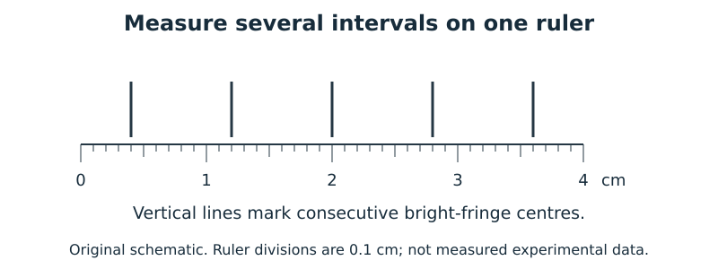
ข้อมูลและสิ่งที่หา: อ่านเส้นสว่างแรกที่ 0.4 cm และเส้นที่ห้าที่ 3.6 cm มี 5 ศูนย์กลางที่ติดกัน
เลือกสูตร: หาความยาวรวมด้วยพิกัดขวาลบซ้าย แล้วหาร 5−1 = 4 ช่องว่าง
เขียนสูตรและจัดรูป: \(\Delta x=\frac{x_5-x_1}{5-1}\)
แทนค่าหลังแปลงหน่วย: \(\Delta x=\frac{3.6-0.4}{4}=\frac{3.2}{4}=0.80\,\mathrm{cm}\)
ตอบ: ระยะห่างแถบสว่างติดกัน 0.80 cm
ตรวจความหมาย: ตรวจกลับ: 4 ช่วง × 0.80 cm = 3.2 cm ไม่ใช่หารด้วย 5 เส้น
สลิตคู่ห่าง 0.240 mm ฉากห่าง 1.50 m แถบสว่างอันดับ 5 อยู่ห่างแนวกลาง 17.5 mm ให้มุมเล็ก
คำถาม 30
สลิตคู่ห่าง 0.240 mm ฉากห่าง 1.50 m แถบสว่างอันดับ 5 อยู่ห่างแนวกลาง 17.5 mm ให้ใช้มุมเล็ก จงหาความยาวคลื่นแสงเป็น nm
ข้อมูลและสิ่งที่หา: d = 0.240 mm = 0.240 × 10⁻³ m; L = 1.50 m; x₅ = 17.5 mm = 17.5 × 10⁻³ m ต้องหา λ
เลือกสูตร: ระยะที่ให้วัดถึงสว่างอันดับ 5 จึงต้องมี n = 5 ในสูตรตำแหน่งก่อนจัดรูปหา λ
เขียนสูตรและจัดรูป: \(x_n=n\lambda L/d\Rightarrow\lambda=dx_n/(nL)\)
แทนค่าหลังแปลงหน่วย: \(\lambda=\frac{(0.240\times10^{-3})(17.5\times10^{-3})}{5(1.50)}=5.60\times10^{-7}\,\mathrm m\)
ตอบ: λ = 560 nm โดยคูณค่าหน่วย m ด้วย 10⁹ เพื่อแปลงเป็น nm
ตรวจความหมาย: หากลืมหารด้วยอันดับ 5 จะได้คำตอบมากเกินจริง 5 เท่า
คำถาม 31
ใช้แสง \(\lambda=450\,\mathrm{nm}\), \(d=0.300\,\mathrm{mm}\) และ \(L=1.60\,\mathrm m\) ให้มุมเล็ก ในรูป P,Q เป็นแถบมืดอันดับ 2 คนละด้านของ C ระยะจากแถบมืดอันดับ 2 ทางซ้ายถึงแถบมืดอันดับ 2 ทางขวาเป็นเท่าใด? ระบุว่าต้องบวกหรือลบระยะจากแนวกลาง
อ่านสัญลักษณ์: λ คือความยาวคลื่นแสง; d คือระยะระหว่างกึ่งกลางสองสลิต; L คือระยะจากสลิตถึงฉาก
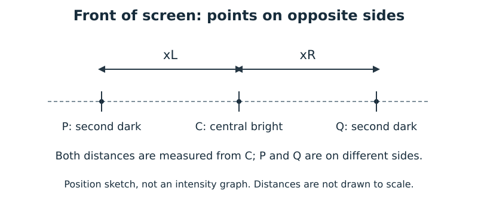
ข้อมูลและสิ่งที่หา: λ = 450 nm = 450 × 10⁻⁹ m; d = 0.300 mm = 0.300 × 10⁻³ m; L = 1.60 m; มืดอันดับ 2 อยู่คนละด้าน
เลือกสูตร: หาตำแหน่งมืดแต่ละด้านด้วย n−0.5 = 1.5 แล้วรวมขนาดระยะเพราะอยู่คนละด้าน
เขียนสูตรและจัดรูป: \(x_{D2}=1.5\lambda L/d,\quad PQ=2x_{D2}\)
แทนค่าหลังแปลงหน่วย: \(x_{D2}=1.5\frac{(450\times10^{-9})(1.60)}{0.300\times10^{-3}}=0.00360\,\mathrm m\)
ตอบ: แต่ละด้านห่างกลาง 3.60 mm จึง PQ = 3.60 + 3.60 = 7.20 mm
ตรวจความหมาย: ถ้าใช้พิกัดมีเครื่องหมาย จะได้ (+3.60)−(−3.60) = 7.20 mm เช่นเดียวกัน
ต้องการให้แถบสว่างติดกันห่าง 3.60 mm เมื่อใช้แสง \(\lambda=480\,\mathrm{nm}\) และวางฉากห่าง 1.50 m ให้มุมเล็ก
คำถาม 32
ต้องการให้แถบสว่างติดกันห่าง 3.60 mm เมื่อใช้แสงความยาวคลื่น 480 nm และฉากห่างสลิต 1.50 m ให้ใช้มุมเล็ก ต้องใช้ระยะระหว่างกึ่งกลางสลิตกี่ μm?
ข้อมูลและสิ่งที่หา: ต้องการ Δx = 3.60 mm = 3.60 × 10⁻³ m; λ = 480 nm = 480 × 10⁻⁹ m; L = 1.50 m ต้องหา d
เลือกสูตร: เป็นระยะระหว่างแถบติดกัน จึงใช้สูตรระยะห่างแถบ คูณทั้งสองข้างด้วย d แล้วหารด้วย Δx
เขียนสูตรและจัดรูป: \(\Delta x=\lambda L/d\Rightarrow d=\lambda L/\Delta x\)
แทนค่าหลังแปลงหน่วย: \(d=\frac{(480\times10^{-9})(1.50)}{3.60\times10^{-3}}=2.00\times10^{-4}\,\mathrm m\)
ตอบ: d = 200 μm เพราะ 1 m = 10⁶ μm
ตรวจความหมาย: หน่วย d เป็นความยาว ไม่ใช่มุม และ d คือระหว่างกึ่งกลางสลิต ไม่ใช่ a
คำถาม 33
ใช้แสง 500 nm และสลิตห่าง 10 µm จงหามุมของแถบสว่างอันดับ 2 จากแนวกลาง โดยใช้สมการที่มี sin θ
อ่านสัญลักษณ์: θ คือมุมจากแนวกลางไปยังจุดสังเกต
ข้อมูลและสิ่งที่หา: λ = 500 nm = 500 × 10⁻⁹ m; d = 10 μm = 10 × 10⁻⁶ m ต้องหามุมแถบสว่างอันดับ 2
เลือกสูตร: โจทย์ถามมุมและกำหนดใช้สมการ sine จึงหาค่า sinθ ก่อน แล้วใช้ inverse sine ในโหมดองศา
เขียนสูตรและจัดรูป: \(d\sin\theta=n\lambda\Rightarrow\theta=\sin^{-1}(2\lambda/d)\)
แทนค่าหลังแปลงหน่วย: \(\sin\theta=\frac{2(500\times10^{-9})}{10\times10^{-6}}=0.100\)
ตอบ: θ = sin⁻¹(0.100) ≈ 5.74° จากแนวกลาง
ตรวจความหมาย: ค่าที่คำนวณก่อนกด inverse sine ไม่มีหน่วย ไม่ใช่คำตอบเป็นองศา และต้องใช้ DEG ไม่ใช่ RAD
คำถาม 34
ใช้แสงความยาวคลื่น 500 nm และสลิตคู่ห่าง 10 μm จงหามุมของแถบมืดอันดับ 1 วัดจากแนวกลาง โดยใช้สมการ sine
ข้อมูลและสิ่งที่หา: λ = 500 nm = 500 × 10⁻⁹ m; d = 10 μm = 10 × 10⁻⁶ m ต้องหามุมแถบมืดอันดับ 1
เลือกสูตร: โจทย์ถามมุมและกำหนดใช้สมการ sine จึงหาค่า sinθ ก่อน แล้วใช้ inverse sine ในโหมดองศา
เขียนสูตรและจัดรูป: \(d\sin\theta=(n-\tfrac12)\lambda\Rightarrow\theta=\sin^{-1}(0.5\lambda/d)\)
แทนค่าหลังแปลงหน่วย: \(\sin\theta=\frac{0.5(500\times10^{-9})}{10\times10^{-6}}=0.0250\)
ตอบ: θ = sin⁻¹(0.0250) ≈ 1.43° จากแนวกลาง
ตรวจความหมาย: ค่าที่คำนวณก่อนกด inverse sine ไม่มีหน่วย ไม่ใช่คำตอบเป็นองศา และต้องใช้ DEG ไม่ใช่ RAD
คำถาม 35
ใช้แสง 600 nm สลิตห่าง 0.30 mm ฉากห่าง 2.0 m จงหาระยะจากแถบสว่างอันดับ 2 ทางซ้าย ถึงแถบมืดอันดับ 3 ทางขวา
ข้อมูลและสิ่งที่หา: λ = 600 nm = 600 × 10⁻⁹ m; d = 0.30 mm = 0.30 × 10⁻³ m; L = 2.0 m ต้องวัดจากสว่างอันดับ 2 ซ้ายไปมืดอันดับ 3 ขวา
เลือกสูตร: ใช้ตัวคูณ 2 สำหรับสว่าง และ 3−0.5 = 2.5 สำหรับมืด แล้วบวกขนาดระยะเพราะอยู่คนละด้าน
เขียนสูตรและจัดรูป: \(\Delta x=\lambda L/d,\quad D=(2+2.5)\Delta x\)
แทนค่าหลังแปลงหน่วย: \(\Delta x=\frac{(600\times10^{-9})(2.0)}{0.30\times10^{-3}}=0.0040\,\mathrm m=4.0\,\mathrm{mm}\)
ตอบ: ซ้ายห่าง 2 × 4.0 = 8.0 mm ขวาห่าง 2.5 × 4.0 = 10 mm ระยะรวม 18 mm
ตรวจความหมาย: การลบ 10−8 จะได้ระยะระหว่างจุดด้านเดียวกัน ไม่ตรงรูปที่คร่อมแนวกลาง
คำถาม 36
ศูนย์กลางแถบสว่าง 7 แถบที่ติดกัน แถบแรกถึงแถบที่ 7 ห่าง 18 mm ถ้าสลิตห่าง 0.20 mm และฉากห่าง 1.0 m จงหาความยาวคลื่น
ข้อมูลและสิ่งที่หา: 7 ศูนย์กลางสว่างคร่อม 18 mm; d = 0.20 mm = 0.20 × 10⁻³ m; L = 1.0 m ต้องหา λ
เลือกสูตร: ข้อมูลเป็นระยะหลายช่วง ต้องหารจำนวนช่องว่างก่อนใช้สูตรระยะห่างแถบ
เขียนสูตรและจัดรูป: \(\Delta x=18/(7-1)\,\mathrm{mm},\quad \lambda=d\Delta x/L\)
แทนค่าหลังแปลงหน่วย: \(\Delta x=3.0\,\mathrm{mm}=3.0\times10^{-3}\,\mathrm m,\quad \lambda=\frac{(0.20\times10^{-3})(3.0\times10^{-3})}{1.0}=6.0\times10^{-7}\,\mathrm m\)
ตอบ: λ = 600 nm โดยแปลง m เป็น nm ด้วยตัวคูณ 10⁹
ตรวจความหมาย: 7 จุดมีเพียง 6 ช่วง และ 18 mm ไม่ใช่ระยะห่างแถบหนึ่งคู่
คำถาม 37
ต้องการให้แถบสว่างติดกันห่าง 4.0 mm เมื่อใช้แสง 500 nm และสลิตห่าง 0.25 mm ควรวางฉากห่างสลิตเท่าใด?
ข้อมูลและสิ่งที่หา: Δx = 4.0 mm = 4.0 × 10⁻³ m; λ = 500 nm = 500 × 10⁻⁹ m; d = 0.25 mm = 0.25 × 10⁻³ m ต้องหาระยะฉาก L
เลือกสูตร: โจทย์กำหนดระยะห่างแถบที่ต้องการ ใช้ Δx = λL/d แล้วคูณ d และหาร λ เพื่อแยก L
เขียนสูตรและจัดรูป: \(\Delta x=\lambda L/d\Rightarrow L=d\Delta x/\lambda\)
แทนค่าหลังแปลงหน่วย: \(L=\frac{(0.25\times10^{-3})(4.0\times10^{-3})}{500\times10^{-9}}=2.0\,\mathrm m\)
ตอบ: ควรวางฉากห่างสลิต 2.0 m
ตรวจความหมาย: ตรวจกลับ: λL/d = (500 × 10⁻⁹)(2.0)/(0.25 × 10⁻³) = 0.0040 m = 4.0 mm ตรงความต้องการ
Physics • Book 3 • Chapter 10 Wave optics
10.2 Light interference through a double slit
Observe the patterns, complete the notes, and progress from path difference to fringe positions.
Each question has its own answer area. Use the supplied figures and reveal solutions to review the reasoning.
Identify the given data and required quantity before selecting an equation. Convert units, then substitute step by step. Each solution explains these decisions rather than giving only the final answer.
0 Meet single and double slits
Begin with the openings and marked distances before investigating the pattern beyond them.
What is a slit?
Opening width versus slit separation
Which wave properties are involved?
Question 1
A plate has several selectable openings. What determines whether a single slit or double slit is being used?
Locate the part of the plate actually illuminated, rather than counting all openings on it.
One illuminated narrow opening is a single slit; two nearby parallel illuminated openings form a double slit.
Specify the illuminated region and the number of transmitting openings. One plate may contain several selectable sets.
Question 2
What are the endpoints of the measurements \(a\) and \(d\) in the diagram?
Symbols: d is centre-to-centre slit separation
Both a and d are lengths, but their arrow endpoints differ. Identify both endpoints before measuring.
a runs between the two edges of one opening, giving its width; d runs between the two slit centres, giving their separation.
The inner edge-to-edge gap is not d. For equal openings, adding one opening width to that gap gives the centre separation.
Question 3
What must happen to the light after the two narrow openings for the waves to overlap?
Before the two waves can overlap, light from both openings must reach the same screen region.
Diffraction spreads light from each narrow opening, creating regions reached by both waves.
In the overlap region, superposition can reinforce or cancel the waves, producing bright and dark fringes. Diffraction and interference therefore have distinct roles.
1 Experiment and read the fringe patterns
A laser illuminates the double slit and screen. The diagrams below are models for reading patterns and comparing variables. In a real experiment, the teacher controls the apparatus and nobody looks directly into the beam.
Use model strips A–C. Screen distance and individual slit width are fixed, and every strip uses the same position scale. Darker ink represents greater light intensity.
Question 4 · a
Compare A and B: which variable changes, and which pattern has closer bright fringes?
Given and required: A: d = 0.20 mm; B: d = 0.40 mm. Wavelength, screen distance and opening width are unchanged. Compare fringe spacings.
Why this equation: At fixed λ and L, spacing is inversely proportional to d. A ratio cancels the unchanged quantities.
Equation and rearrangement: \(\Delta x=\lambda L/d,\quad \frac{\Delta x_B}{\Delta x_A}=\frac{d_A}{d_B}\)
Substitute after converting units: \(\frac{\Delta x_B}{\Delta x_A}=\frac{0.20}{0.40}=0.50\)
Answer: B has closer fringes: its spacing is half that in A.
Check the meaning: The matching mm units cancel. Image brightness is not a substitute for measuring spacing.
Question 4 · b
Compare B and C: which has greater fringe spacing? Explain using wavelength, not brightness.
Given and required: B uses λ = 520 nm; C uses λ = 650 nm, with d and L unchanged. Compare spacings.
Why this equation: Changing colour changes wavelength; at fixed geometry, spacing is proportional to λ.
Equation and rearrangement: \(\frac{\Delta x_C}{\Delta x_B}=\frac{\lambda_C}{\lambda_B}\)
Substitute after converting units: \(\frac{\Delta x_C}{\Delta x_B}=\frac{650}{520}=1.25\)
Answer: C has wider spacing, 1.25 times that of B.
Check the meaning: A factor of 1.25 means a 25% increase, not a 125% increase; compare positions rather than image brightness.
Before recording each case, the experimenter aligns the central axis with the same screen mark.
Question 5
Why does this help comparison? Must shifting the whole pattern mean that fringe spacing has changed?
Use a common central axis and distance scale when comparing corresponding orders.
If the whole pattern shifts while neighbouring fringes remain equally spaced, the reference position changes but the spacing does not.
Measure neighbouring centres, or a multi-interval span divided by its number of intervals, before concluding that spacing has changed.
Question 6
Between which points should the width of one bright fringe be measured?
Choose one bright fringe and locate the two neighbouring minima that bound it.
Read both boundary coordinates on the same ruler: width = right coordinate − left coordinate.
Do not use the centre-to-one-edge distance, or the width of the diffraction envelope containing many fringes.
Conclusion from patterns and experiment
Someone claims that two openings must produce only two bright regions aligned with them.
Question 7
How do the multiple bands challenge this account, and how does interference explain dark regions?
Two straight transmitting paths alone do not explain many alternating fringes or darkness inside the overlap region.
The diffracted waves overlap. Matching phases reinforce the fields; opposite phases with equal amplitudes cancel them.
Darkness need not mean that neither wave arrives. It results from cancellation of the fields, providing evidence for wave interference.
2 Path difference, phase and fringe order
Coherent sources and the assumed initial phase
Optical path difference
Question 8
Light has wavelength λ = 500 nm. At P the two source-to-point paths are 12 wavelengths and 10 wavelengths long. Find their path difference in wavelengths.
Symbols: λ is light wavelength
Given and required: The two source-to-P paths are 12λ and 10λ; λ is one wavelength. Find their path difference.
Why this equation: Path difference is the longer path minus the shorter, not their sum.
Equation and rearrangement: \(\Delta r=|r_1-r_2|\)
Substitute after converting units: \(\Delta r=|12\lambda-10\lambda|=(12-10)\lambda=2\lambda\)
Answer: The path difference is two wavelengths.
Check the meaning: For example, with λ = 500 nm the paths are 6000 and 5000 nm, differing by 1000 nm = 2λ.
Relating path difference to phase
Travelling one wavelength \(\lambda\) changes the phase by one cycle, or \(2\pi\) rad.
A path difference \(\Delta r\) therefore corresponds to \(\dfrac{\Delta r}{\lambda}\) cycles.
\[\frac{\Delta\phi}{2\pi}=\frac{\Delta r}{\lambda}\quad\Rightarrow\quad\boxed{\Delta\phi=\frac{2\pi\Delta r}{\lambda}}\]This is the phase difference due to the path difference. For slits initially in phase, it is the phase difference at the observation point.
If \(\Delta r=m\lambda\), then \(\Delta\phi=2m\pi\) rad. For integer \(m\), the waves are in phase again.
Example 1
Sources U,V start in phase. In each case find the path difference, accumulated phase difference and equivalent phase modulo 2π.
Example 1 · a
Initially in-phase sources U,V emit 500 nm light. The paths U to P and V to P are 35.20 μm and 36.45 μm. Find the path difference, accumulated phase difference and equivalent phase.
Given and required: The sources start in phase; λ = 500 nm; UP = 35.20 μm; VP = 36.45 μm. Find path and phase differences.
Why this equation: First find the excess path, then divide by wavelength to count cycles. One cycle corresponds to 2π rad.
Equation and rearrangement: \(\Delta r=|VP-UP|,\quad \Delta\phi=2\pi\frac{\Delta r}{\lambda}\)
Substitute after converting units: \(\Delta r=(36.45-35.20)\times1000=1250\,\mathrm{nm},\quad \Delta\phi=2\pi\frac{1250}{500}=5\pi\)
Answer: Δr = 1.25 μm = 1250 nm; accumulated phase = 5π rad. Removing two full cycles (4π) leaves π rad, so the waves are opposite in phase.
Check the meaning: 1250/500 is 2.5 cycles, not 2.5 radians; convert μm to nm before dividing.
Example 1 · b
In a separate case, initially in-phase U,V emit 500 nm light. UP is 40 wavelengths long and VP is 46 wavelengths long. Find path difference, accumulated phase and equivalent phase.
Given and required: UP = 40λ; VP = 46λ; initially in-phase sources. Find accumulated and equivalent phases.
Why this equation: Both paths use the same wavelength unit: subtract their coefficients, then use 2π per cycle.
Equation and rearrangement: \(\Delta r=|VP-UP|,\quad \Delta\phi=2\pi\Delta r/\lambda\)
Substitute after converting units: \(\Delta r=(46-40)\lambda=6\lambda,\quad \Delta\phi=2\pi(6)=12\pi\)
Answer: Path difference = 6λ; accumulated phase = 12π rad, or six full cycles. Equivalent phase = 0 rad, so the waves are in phase.
Check the meaning: For λ = 500 nm the paths are 20000 and 23000 nm; their 3000 nm difference is still six wavelengths.
Two sources start in phase. Let \(UP=92.50\lambda\) and \(VP=96.75\lambda\).
Question 9 · a
Initially in-phase sources U,V have paths UP = 92.50λ and VP = 96.75λ, where λ is their common wavelength. Find path difference in wavelengths and accumulated phase difference in rad.
Symbols: λ is light wavelength
Given and required: UP = 92.50λ and VP = 96.75λ; initially in phase. Find Δr and accumulated phase difference.
Why this equation: Subtract paths first, then multiply the difference in cycles by 2π.
Equation and rearrangement: \(\Delta r=|VP-UP|,\quad \Delta\phi=2\pi\Delta r/\lambda\)
Substitute after converting units: \(\Delta r=(96.75-92.50)\lambda=4.25\lambda,\quad \Delta\phi=2\pi(4.25)=8.5\pi\)
Answer: Δr = 4.25λ and accumulated phase = 8.5π rad.
Check the meaning: For accumulated phase, retain all cycles rather than reducing modulo a full cycle.
Question 9 · b
For UP = 92.50λ and VP = 96.75λ with initially in-phase equal-amplitude sources, is P a maximum or a complete minimum? Explain using the path difference in cycles.
Symbols: λ is light wavelength
With UP = 92.50λ and VP = 96.75λ, the path difference is 4.25λ. Test the ratio 4.25 against the fringe conditions.
A maximum needs an integer number of cycles, such as 4 or 5; complete cancellation needs a half-integer, such as 3.5 or 4.5.
4.25 satisfies neither condition, so the point is neither a maximum nor completely dark. Reducing 8.5π by 8π leaves π/2 rad, not 0 or π.
Do not round 4.25 to 4 or 4.5: that changes the physical point being classified.
Conditions for bright and dark fringes
Bright: \(\Delta r=n\lambda\), n = 0, 1, 2, … . The waves arrive in phase and interfere constructively.
Dark: \(\Delta r=(n-\tfrac12)\lambda\), n = 1, 2, 3, … . Opposite phases interfere destructively; equal amplitudes give complete cancellation.
How is fringe order counted?
Question 10
What type and order of fringe occurs at a point equidistant from the two slits?
At an equidistant point r₁ = r₂, so subtracting gives Δr = 0.
For initially in-phase sources, maxima satisfy Δr = nλ. Substituting Δr = 0 gives n = 0.
The point is the central bright fringe, order 0, not a dark fringe: the waves arrive in phase and reinforce.
Question 11
If \(\Delta r=1.5\lambda\), what fringe type and order occur?
Symbols: λ is light wavelength; Δr is the magnitude of the path-length difference
A path difference of 1.5λ gives a ratio Δr/λ = 1.5 cycles.
This is not an integer, so it is not a maximum; it matches the dark condition Δr/λ = n − 0.5.
Substitute 1.5 = n − 0.5, giving n = 1.5 + 0.5 = 2: the second dark fringe.
The order is the integer 2; 1.5 is the path difference in wavelengths, not a dark-fringe order.
Question 12
If \(\Delta r=1.2\lambda\), is the point exactly a bright maximum or a completely dark minimum?
Symbols: λ is light wavelength; Δr is the magnitude of the path-length difference
The path difference in wavelengths is Δr/λ = 1.2.
For initially in-phase equal-amplitude sources, maxima require 0,1,2,… and complete minima require 0.5,1.5,2.5,… wavelengths.
1.2 belongs to neither set. The point lies between extrema; do not call it dark or round it to the nearest fringe order.
Example 2
Use \(\lambda=480\,\mathrm{nm}\) from two initially in-phase sources. Identify the fringe type and order at P.
Example 2 · a
Use 480 nm light from initially in-phase sources. At P the two paths differ by 1440 nm. Identify the fringe type and order.
Given and required: Wavelength λ = 480 nm; path difference Δr = 1440 nm. Classify the fringe and its order for initially in-phase sources.
Why this equation: Divide path difference by wavelength to distinguish integer from half-integer cycles.
Equation and rearrangement: \(R=\Delta r/\lambda\)
Substitute after converting units: \(R=\frac{1440}{480}=3\)
Answer: R = 3 is an integer: bright order 3.
Check the meaning: nm divided by nm is dimensionless; the ratio counts cycles rather than a distance in nm.
Example 2 · b
Use 480 nm light from initially in-phase sources. Another point has path difference 2160 nm. Identify the fringe type and order.
Given and required: Wavelength λ = 480 nm; path difference Δr = 2160 nm. Classify the fringe and its order for initially in-phase sources.
Why this equation: Divide path difference by wavelength to distinguish integer from half-integer cycles.
Equation and rearrangement: \(R=\Delta r/\lambda\)
Substitute after converting units: \(R=\frac{2160}{480}=4.5\)
Answer: R = 4.5 = n − 0.5 gives n = 5: dark order 5.
Check the meaning: nm divided by nm is dimensionless; the ratio counts cycles rather than a distance in nm.
Question 13
Initially in-phase U,V have paths UP = (k+2)λ and VP = (k+6)λ. Here λ is wavelength and k is an unknown nonnegative integer. Classify P and its order. Must k be known first?
Symbols: λ is light wavelength
Given and required: Paths UP = (k+2)λ and VP = (k+6)λ, with integer k. Find fringe type and order.
Why this equation: Fringe type depends on the difference, not either path separately, so subtract the expressions first.
Equation and rearrangement: \(\Delta r=|VP-UP|\)
Substitute after converting units: \(\Delta r=|(k+6)-(k+2)|\lambda=|k+6-k-2|\lambda=4\lambda\)
Answer: Four wavelengths is an integer cycle difference: bright order 4. The value of k is unnecessary.
Check the meaning: For example k = 10 gives paths 12λ and 16λ, still differing by 4λ; k represents a common contribution to both paths.
3 From path difference to screen angle and position
Use the same diagram to identify O,C,P and d,L,x before choosing an equation.
Meaning of the geometry variables
Angular fringe conditions
For a screen far from the slits compared with d, \(\Delta r\approx d\sin\theta\).
Bright: \(d\sin\theta=n\lambda\), n = 0, 1, 2, … .
Dark: \(d\sin\theta=(n-\tfrac12)\lambda\), n = 1, 2, 3, … .
Small-angle screen-position formulas
At small angle, \(\sin\theta\approx\tan\theta=x/L\); the book uses roughly \(\theta<10^\circ\).
Bright: \(x_n\approx n\lambda L/d\).
Dark: \(x_n\approx(n-\tfrac12)\lambda L/d\).
Require L much greater than d and x much smaller than L. Use the sine form when the angle is not small.
Question 14
Between which two lines is θ measured, and where does x start on the screen?
Symbols: θ is the angle from the central axis to the observation point; x is measured from the centre unless a diagram arrow explicitly defines a different span
Start at O, the midpoint of the slits. OC is the central axis toward the screen; OP points toward the observation point.
θ is the angle from OC to OP, with vertex O. x is the screen distance from C to P; L is the distance O to C.
The triangle OCP gives tanθ = x/L. θ is not the angle between UP and VP, and d is not the screen distance.
Question 15
A question gives an angle of 20°. Should you use the sine form or immediately replace it by x/L?
Symbols: L is slit-to-screen distance; x is measured from the centre unless a diagram arrow explicitly defines a different span
The given quantity is an angle of 20°, so begin with the angle rather than a screen-distance ratio.
For a far screen use Δr ≈ d sinθ with the bright/dark condition. Replacing sinθ by tanθ = x/L requires the additional small-angle condition.
Do not silently treat 20° as small: sin20° ≈ 0.342 while tan20° ≈ 0.364, about 6.4% larger. Start with the sine equation.
Question 16
How does the distance to the third bright fringe differ from the spacing of adjacent bright fringes?
Δx is adjacent bright-centre spacing; x₃ is the distance from the central bright fringe to bright order 3.
Count 0 → 1 → 2 → 3: there are three intervals, so x₃ = 3Δx at small angles.
For example, if adjacent spacing is 2 mm, order 3 is 3 × 2 = 6 mm from the centre, not 2 mm.
Example 3
Light of \(\lambda=520\,\mathrm{nm}\) passes through slits separated by \(d=13.0\,\mu\mathrm m\). Use the far-field angular relation for point P in each separate case; sine values are supplied.
Example 3 · a
Light of wavelength 520 nm passes through slits separated centre-to-centre by 13.0 μm. At far-screen point P, sinθ = 0.0800, with θ measured from the central axis. Classify the fringe and order.
Symbols: θ is the angle from the central axis to the observation point
Given and required: λ = 520 nm = 520 × 10⁻⁹ m; d = 13.0 μm = 13.0 × 10⁻⁶ m; sinθ = 0.0800. Classify the fringe.
Why this equation: The sine is given, so use d sinθ for path difference and compare with λ; finding θ first is unnecessary.
Equation and rearrangement: \(R=\frac{d\sin\theta}{\lambda}\)
Substitute after converting units: \(R=\frac{(13.0\times10^{-6})(0.08)}{520\times10^{-9}}=2\)
Answer: R = 2 is an integer: bright order 2.
Check the meaning: Use m for both lengths so R is dimensionless. A half-integer ratio is not itself the dark order.
Example 3 · b
Use the same 520 nm light and 13.0 μm slit separation. At another point sinθ = 0.1000. Classify the fringe type and order.
Symbols: θ is the angle from the central axis to the observation point
Given and required: λ = 520 nm = 520 × 10⁻⁹ m; d = 13.0 μm = 13.0 × 10⁻⁶ m; sinθ = 0.1000. Classify the fringe.
Why this equation: The sine is given, so use d sinθ for path difference and compare with λ; finding θ first is unnecessary.
Equation and rearrangement: \(R=\frac{d\sin\theta}{\lambda}\)
Substitute after converting units: \(R=\frac{(13.0\times10^{-6})(0.1)}{520\times10^{-9}}=2.5\)
Answer: R = 2.5 = n − 0.5 gives n = 3: dark order 3.
Check the meaning: Use m for both lengths so R is dimensionless. A half-integer ratio is not itself the dark order.
Example 4
For \(\lambda=640\,\mathrm{nm}\), \(d=0.160\,\mathrm{mm}\) and \(L=1.50\,\mathrm m\), point P is on the side shown. Identify the fringe type/order in each case and check \(x/L\).
Example 4 · a
Light of wavelength 640 nm passes through slits 0.160 mm apart to a screen 1.50 m away. P lies 18.0 mm from the centre. Check the small-angle assumption, then classify its fringe and order.
Given and required: λ = 640 nm = 640 × 10⁻⁹ m; d = 0.160 mm = 0.160 × 10⁻³ m; L = 1.50 m; x = 18.0 mm = 18 × 10⁻³ m.
Why this equation: Check x/L = 0.0120, which is small. Approximate path difference by dx/L and divide by λ.
Equation and rearrangement: \(R=\frac{dx}{\lambda L}\)
Substitute after converting units: \(R=\frac{(0.160\times10^{-3})(18\times10^{-3})}{(640\times10^{-9})(1.50)}=3\)
Answer: R = 3 = n: bright order 3.
Check the meaning: x is measured from the central axis to P, not between adjacent fringes.
Example 4 · b
Use 640 nm light, 0.160 mm slit separation and a screen 1.50 m away. Another point lies 21.0 mm from the centre. Check the small-angle assumption and classify its fringe and order.
Given and required: λ = 640 nm = 640 × 10⁻⁹ m; d = 0.160 mm = 0.160 × 10⁻³ m; L = 1.50 m; x = 21.0 mm = 21 × 10⁻³ m.
Why this equation: Check x/L = 0.0140, which is small. Approximate path difference by dx/L and divide by λ.
Equation and rearrangement: \(R=\frac{dx}{\lambda L}\)
Substitute after converting units: \(R=\frac{(0.160\times10^{-3})(21\times10^{-3})}{(640\times10^{-9})(1.50)}=3.5\)
Answer: R = 3.5 = n − 0.5 gives n = 4: dark order 4.
Check the meaning: x is measured from the central axis to P, not between adjacent fringes.
4 Calculating fringe positions and spacing
Spacing between adjacent fringes
The next questions use initially in-phase coherent light. Show the unit conversions and selected equations in each answer area.
Question 17
For 600 nm light, d = 0.20 mm and L = 1.0 m, find the distance from the centre to the third bright fringe.
Symbols: d is centre-to-centre slit separation; L is slit-to-screen distance
Given and required: Wavelength λ = 600 nm = 600 × 10⁻⁹ m; slit separation d = 0.2 mm = 0.2 × 10⁻³ m; screen distance L = 1 m. Find the distance from the centre to bright order 3.
Why this equation: This is a bright-fringe position measured from the centre at small angles, so the order factor is n = 3; adjacent spacing alone does not include that factor.
Equation and rearrangement: \(x=n\frac{\lambda L}{d}\)
Substitute after converting units: \(x=3\frac{(600\times10^{-9})(1)}{0.2\times10^{-3}}=0.009\,\mathrm m\)
Answer: 9 mm from the centre (1 m = 1000 mm).
Check the meaning: The central bright fringe is order 0; the requested order is counted outwards. The answer is a distance magnitude, not a specified left/right coordinate.
Question 18
Use 600 nm light, slits 0.20 mm apart and a screen 1.0 m away. At small angles, find the distance from the centre to the second dark fringe.
Given and required: Wavelength λ = 600 nm = 600 × 10⁻⁹ m; slit separation d = 0.2 mm = 0.2 × 10⁻³ m; screen distance L = 1 m. Find the distance from the centre to dark order 2.
Why this equation: This is a dark-fringe position measured from the centre at small angles, so the order factor is n − 1/2 = 1.5; adjacent spacing alone does not include that factor.
Equation and rearrangement: \(x=(n-\tfrac12)\frac{\lambda L}{d}\)
Substitute after converting units: \(x=1.5\frac{(600\times10^{-9})(1)}{0.2\times10^{-3}}=0.0045\,\mathrm m\)
Answer: 4.5 mm from the centre (1 m = 1000 mm).
Check the meaning: The first dark fringe is half a spacing from the centre; dark orders start at n = 1. The answer is a distance magnitude, not a specified left/right coordinate.
Question 19
Six consecutive bright-fringe centres span 15 mm from the first to the sixth. What is the adjacent-fringe spacing?
Given and required: Six consecutive bright centres span 15 mm from first to last. Find one spacing.
Why this equation: Intervals lie between centres, so six centres enclose five intervals.
Equation and rearrangement: \(\Delta x=\frac{\text{total span}}{N-1}\)
Substitute after converting units: \(\Delta x=\frac{15}{6-1}=3.0\,\mathrm{mm}\)
Answer: Adjacent bright centres are 3.0 mm apart.
Check the meaning: Check: 5 × 3.0 = 15 mm. Dividing by 6 would count an extra interval.
Question 20
The slit separation is 0.20 mm, screen distance 1.0 m and fringe spacing 2.5 mm. Find the wavelength in nm.
Given and required: d = 0.20 mm = 0.20 × 10⁻³ m; L = 1.0 m; Δx = 2.5 mm = 2.5 × 10⁻³ m. Find λ in nm.
Why this equation: The given distance is adjacent spacing, not an order position. Start with the spacing equation and isolate λ.
Equation and rearrangement: \(\Delta x=\frac{\lambda L}{d}\Rightarrow\lambda=\frac{d\Delta x}{L}\)
Substitute after converting units: \(\lambda=\frac{(0.20\times10^{-3})(2.5\times10^{-3})}{1.0}=5.0\times10^{-7}\,\mathrm m\)
Answer: λ = 500 nm because 5.0 × 10⁻⁷ m × 10⁹ nm/m = 500 nm.
Check the meaning: No order factor n is needed: the given distance already represents one adjacent interval.
5 Use the equations to explain changes
Relationships between variables
Question 21
In a double-slit experiment change wavelength from 450 to 600 nm while retaining slit separation d and screen distance L. By what factor does adjacent bright spacing change?
Symbols: d is centre-to-centre slit separation; L is slit-to-screen distance
Given and required: Change λ from 450 to 600 nm, retaining d and L. Find new spacing divided by old spacing.
Why this equation: Take a ratio of Δx = λL/d so the unchanged L and d cancel.
Equation and rearrangement: \(\frac{\Delta x_2}{\Delta x_1}=\frac{\lambda_2}{\lambda_1}\)
Substitute after converting units: \(\frac{\Delta x_2}{\Delta x_1}=\frac{600}{450}=\frac43\)
Answer: New spacing is 4/3 of the original, approximately 1.33 times.
Check the meaning: For example, a former spacing of 3.0 mm becomes 4.0 mm; numerical d and L are not needed.
Question 22
With the same wavelength, double both L and d. What happens to fringe spacing?
Symbols: d is centre-to-centre slit separation; L is slit-to-screen distance
Given and required: λ is unchanged; L₂ = 2L₁ and d₂ = 2d₁. Compare fringe spacings.
Why this equation: Both L and d change; include both factors rather than considering either alone.
Equation and rearrangement: \(\frac{\Delta x_2}{\Delta x_1}=\frac{L_2}{L_1}\frac{d_1}{d_2}\)
Substitute after converting units: \(\frac{\Delta x_2}{\Delta x_1}=2\times\frac12=1\)
Answer: Spacing is unchanged: doubling L is offset by doubling d.
Check the meaning: For example, an original spacing of 2 mm remains 2 mm rather than becoming 4 mm.
Question 23
Keep wavelength, d and L unchanged but increase source brightness. Does the fringe spacing change?
Symbols: d is centre-to-centre slit separation; L is slit-to-screen distance
Separate source intensity from wavelength: making the same-colour source brighter does not change λ.
In this model, fringe positions and spacing depend on λ, d and L, all fixed here; therefore the positions stay the same.
Bright fringes become more intense but not farther apart or closer together, assuming unchanged illumination geometry and relative slit intensities.
U,V are symmetric about central axis OC and start in phase. At R, \(|UR-VR|=1.5\lambda\).
Question 24 · a
Initially in-phase U,V are symmetric about OC. C is on the central axis; R has path difference 1.5λ. Identify the fringe type and order at C and R.
Symbols: λ is light wavelength
Read the diagram: C is on the central axis and equidistant from the slits; R has path difference 1.5λ.
At C: Δr = 0 = 0λ matches the bright condition nλ for n = 0, giving the central bright fringe.
At R: 1.5λ = (n − 0.5)λ gives n = 2, the second dark fringe. Use path difference, not either individual path.
Question 24 · b
Keep wavelength λ unchanged, but multiply screen distance by 1.5 and slit separation by 3 simultaneously. Find new adjacent spacing divided by its original value.
Symbols: λ is light wavelength
Given and required: λ unchanged; L₂ = 1.5L₁ and d₂ = 3d₁. Compare new and old spacing.
Why this equation: Use Δx = λL/d and take a ratio to include both variable changes.
Equation and rearrangement: \(\frac{\Delta x_2}{\Delta x_1}=\frac{L_2}{L_1}\frac{d_1}{d_2}\)
Substitute after converting units: \(\frac{\Delta x_2}{\Delta x_1}=1.5\times\frac13=0.5\)
Answer: Adjacent spacing becomes half the original.
Check the meaning: For example 4 mm becomes 2 mm. Increasing L alone would not give the same result as changing both L and d.
Fringe positions here use the double-slit model under the stated assumptions. A real pattern may become less intense toward its sides because openings have finite width. Single-slit diffraction is studied in 10.3.
6 Read diagrams and calculate fringe positions
Identify distance endpoints and scale marks before calculating. These tasks and diagrams are newly authored.
Question 25
Light of \(\lambda=460\,\mathrm{nm}\) passes through slits separated by \(d=0.230\,\mathrm{mm}\) onto a screen \(L=1.20\,\mathrm m\) away. Assume small angles. Find the second bright-fringe position measured from the central axis, in mm.
Symbols: λ is light wavelength; d is centre-to-centre slit separation; L is slit-to-screen distance
Given and required: Wavelength λ = 460 nm = 460 × 10⁻⁹ m; slit separation d = 0.23 mm = 0.23 × 10⁻³ m; screen distance L = 1.2 m. Find the distance from the centre to bright order 2.
Why this equation: This is a bright-fringe position measured from the centre at small angles, so the order factor is n = 2; adjacent spacing alone does not include that factor.
Equation and rearrangement: \(x=n\frac{\lambda L}{d}\)
Substitute after converting units: \(x=2\frac{(460\times10^{-9})(1.2)}{0.23\times10^{-3}}=0.0048\,\mathrm m\)
Answer: 4.8 mm from the centre (1 m = 1000 mm).
Check the meaning: The central bright fringe is order 0; the requested order is counted outwards. The answer is a distance magnitude, not a specified left/right coordinate.
Question 26 · a
Use \(\lambda=540\,\mathrm{nm}\), \(d=0.180\,\mathrm{mm}\) and \(L=1.60\,\mathrm m\) at small angles. Lines mark bright-fringe centres; C is central. Every subpart refers to this original setup. Find the marked x in mm, taking care to count intervals.
Symbols: λ is light wavelength; d is centre-to-centre slit separation; L is slit-to-screen distance; x is measured from the centre unless a diagram arrow explicitly defines a different span
Given and required: λ = 540 nm = 540 × 10⁻⁹ m; d = 0.180 mm = 0.180 × 10⁻³ m; L = 1.60 m. Arrow x spans three intervals.
Why this equation: Find one adjacent spacing, then multiply by the number of gaps spanned by the arrow; the number of lines is not the number of intervals.
Equation and rearrangement: \(\Delta x=\lambda L/d,\quad x=3\Delta x\)
Substitute after converting units: \(\Delta x=\frac{(540\times10^{-9})(1.60)}{0.180\times10^{-3}}=0.00480\,\mathrm m=4.80\,\mathrm{mm}\)
Answer: x = 3 × 4.80 = 14.4 mm.
Check the meaning: d is the separation between slit centres, not the opening width a.
Question 26 · b
Use 540 nm light and 0.180 mm slit separation. Arrow x spans the same intervals as in the figure. Move the screen from 1.60 to 2.40 m. Find the new x at small angles.
Symbols: x is measured from the centre unless a diagram arrow explicitly defines a different span
Given and required: Initially x₁ = 14.4 mm at L₁ = 1.60 m. Move the screen to L₂ = 2.40 m, retaining λ,d and the same interval count.
Why this equation: At the same wavelength, slits and measured orders, screen distance x is proportional to L.
Equation and rearrangement: \(\frac{x_2}{x_1}=\frac{L_2}{L_1}\Rightarrow x_2=x_1\frac{L_2}{L_1}\)
Substitute after converting units: \(x_2=14.4\frac{2.40}{1.60}=14.4(1.5)=21.6\,\mathrm{mm}\)
Answer: New distance x is 21.6 mm.
Check the meaning: Multiplying L by 1.5 must multiply x by 1.5. This part uses the initial condition, with no additional variable changes.
Question 26 · c
Return to the initial condition in Q26: 540 nm light, 0.180 mm slit separation and screen distance 1.60 m. If only incident intensity increases, does arrow distance x change?
Symbols: x is measured from the centre unless a diagram arrow explicitly defines a different span
Separate source intensity from wavelength: making the same-colour source brighter does not change λ.
In this model, fringe positions and spacing depend on λ, d and L, all fixed here; therefore the positions stay the same.
Bright fringes become more intense but not farther apart or closer together, assuming unchanged illumination geometry and relative slit intensities.
Question 27
The graph models light intensity, with the central axis at the ruler’s 3.0 cm mark. It is not an experimental photograph. Read the nearest intensity minimum on each side of the central axis, then find the central bright-fringe width.
Given and required: The central axis is at 3.0 cm. Read the two minima bounding the central bright fringe on the same scale.
Why this equation: The width of one fringe runs from one bounding minimum to the other, not from the centre to one boundary.
Equation and rearrangement: \(w=x_{\rm right}-x_{\rm left}\)
Substitute after converting units: \(w=3.6-2.4=1.2\,\mathrm{cm}\)
Answer: The central bright-fringe width is approximately 1.2 cm.
Check the meaning: Check both halves: 3.0−2.4 = 0.6 and 3.6−3.0 = 0.6 cm, totalling 1.2 cm. Use the diagram scale, not a ruler placed on the display.
7 Double-slit interference problems
All tasks use normal incidence and initially in-phase slits. Screen-position tasks assume small angles; angular tasks use the sine equation.
Use \(\lambda=620\,\mathrm{nm}\), \(d=0.310\,\mathrm{mm}\) and \(L=1.80\,\mathrm m\) at small angles.
Question 28
Light of wavelength 620 nm passes through slits 0.310 mm apart to a screen 1.80 m away. At small angles, how far is the first dark fringe from the centre in mm?
Given and required: Wavelength λ = 620 nm = 620 × 10⁻⁹ m; slit separation d = 0.31 mm = 0.31 × 10⁻³ m; screen distance L = 1.8 m. Find the distance from the centre to dark order 1.
Why this equation: This is a dark-fringe position measured from the centre at small angles, so the order factor is n − 1/2 = 0.5; adjacent spacing alone does not include that factor.
Equation and rearrangement: \(x=(n-\tfrac12)\frac{\lambda L}{d}\)
Substitute after converting units: \(x=0.5\frac{(620\times10^{-9})(1.8)}{0.31\times10^{-3}}=0.0018\,\mathrm m\)
Answer: 1.8 mm from the centre (1 m = 1000 mm).
Check the meaning: The first dark fringe is half a spacing from the centre; dark orders start at n = 1. The answer is a distance magnitude, not a specified left/right coordinate.
Question 29
The five vertical lines mark consecutive bright-fringe centres. Find adjacent bright-fringe spacing by measuring from the first to fifth line and dividing by the number of intervals. Give cm.
Given and required: The first bright centre reads 0.4 cm and the fifth reads 3.6 cm; there are five consecutive centres.
Why this equation: Subtract ruler coordinates for the total span, then divide by 5−1 = 4 intervals.
Equation and rearrangement: \(\Delta x=\frac{x_5-x_1}{5-1}\)
Substitute after converting units: \(\Delta x=\frac{3.6-0.4}{4}=\frac{3.2}{4}=0.80\,\mathrm{cm}\)
Answer: Adjacent bright-centre spacing is 0.80 cm.
Check the meaning: Check: 4 intervals × 0.80 cm = 3.2 cm. Do not divide by the five lines.
Slits are 0.240 mm apart, the screen is 1.50 m away, and the fifth bright fringe lies 17.5 mm from the central axis. Assume small angles.
Question 30
Slits are 0.240 mm apart, the screen is 1.50 m away and bright order 5 lies 17.5 mm from the centre. At small angles, find the wavelength in nm.
Given and required: d = 0.240 mm = 0.240 × 10⁻³ m; L = 1.50 m; x₅ = 17.5 mm = 17.5 × 10⁻³ m. Find λ.
Why this equation: The given distance reaches bright order 5, so use n = 5 in the position equation before isolating λ.
Equation and rearrangement: \(x_n=n\lambda L/d\Rightarrow\lambda=dx_n/(nL)\)
Substitute after converting units: \(\lambda=\frac{(0.240\times10^{-3})(17.5\times10^{-3})}{5(1.50)}=5.60\times10^{-7}\,\mathrm m\)
Answer: λ = 560 nm; multiply the value in m by 10⁹ to convert to nm.
Check the meaning: Omitting the order factor would make the answer five times too large.
Question 31
Use \(\lambda=450\,\mathrm{nm}\), \(d=0.300\,\mathrm{mm}\) and \(L=1.60\,\mathrm m\) at small angles. P and Q mark second dark fringes on opposite sides of C. Find the distance from the second dark fringe on the left to the second dark fringe on the right. State whether the distances from the centre should be added or subtracted.
Symbols: λ is light wavelength; d is centre-to-centre slit separation; L is slit-to-screen distance
Given and required: λ = 450 nm = 450 × 10⁻⁹ m; d = 0.300 mm = 0.300 × 10⁻³ m; L = 1.60 m. Two second-dark fringes lie on opposite sides.
Why this equation: Use dark-order factor n−0.5 = 1.5 for each side, then add the distance magnitudes because they lie on opposite sides.
Equation and rearrangement: \(x_{D2}=1.5\lambda L/d,\quad PQ=2x_{D2}\)
Substitute after converting units: \(x_{D2}=1.5\frac{(450\times10^{-9})(1.60)}{0.300\times10^{-3}}=0.00360\,\mathrm m\)
Answer: Each fringe is 3.60 mm from the centre, so PQ = 3.60 + 3.60 = 7.20 mm.
Check the meaning: Using signed coordinates gives the same result: (+3.60)−(−3.60) = 7.20 mm.
To obtain 3.60 mm adjacent bright-fringe spacing, use \(\lambda=480\,\mathrm{nm}\) and a screen 1.50 m away. Assume small angles.
Question 32
To obtain adjacent bright spacing of 3.60 mm using 480 nm light and a screen 1.50 m away, what slit-centre separation in μm is required? Assume small angles.
Given and required: Required spacing Δx = 3.60 mm = 3.60 × 10⁻³ m; λ = 480 nm = 480 × 10⁻⁹ m; L = 1.50 m. Find d.
Why this equation: This is adjacent spacing. Multiply the spacing equation by d, then divide by Δx.
Equation and rearrangement: \(\Delta x=\lambda L/d\Rightarrow d=\lambda L/\Delta x\)
Substitute after converting units: \(d=\frac{(480\times10^{-9})(1.50)}{3.60\times10^{-3}}=2.00\times10^{-4}\,\mathrm m\)
Answer: d = 200 μm, using 1 m = 10⁶ μm.
Check the meaning: d is a length, not an angle; it is centre-to-centre slit separation, not opening width a.
Question 33
For 500 nm light and slit separation 10 µm, find the angle of the second bright fringe from the centre using the sine equation.
Given and required: λ = 500 nm = 500 × 10⁻⁹ m; d = 10 μm = 10 × 10⁻⁶ m. Find the angle of bright order 2.
Why this equation: The required quantity is an angle using the sine equation. Find sinθ first, then apply inverse sine in degree mode.
Equation and rearrangement: \(d\sin\theta=n\lambda\Rightarrow\theta=\sin^{-1}(2\lambda/d)\)
Substitute after converting units: \(\sin\theta=\frac{2(500\times10^{-9})}{10\times10^{-6}}=0.100\)
Answer: θ = sin⁻¹(0.100) ≈ 5.74° from the central axis.
Check the meaning: The sine value is dimensionless, not already an angle in degrees. Use DEG rather than RAD.
Question 34
Use light of wavelength 500 nm and slit separation 10 μm. Find the first-dark angle from the central axis using the sine equation.
Given and required: λ = 500 nm = 500 × 10⁻⁹ m; d = 10 μm = 10 × 10⁻⁶ m. Find the angle of dark order 1.
Why this equation: The required quantity is an angle using the sine equation. Find sinθ first, then apply inverse sine in degree mode.
Equation and rearrangement: \(d\sin\theta=(n-\tfrac12)\lambda\Rightarrow\theta=\sin^{-1}(0.5\lambda/d)\)
Substitute after converting units: \(\sin\theta=\frac{0.5(500\times10^{-9})}{10\times10^{-6}}=0.0250\)
Answer: θ = sin⁻¹(0.0250) ≈ 1.43° from the central axis.
Check the meaning: The sine value is dimensionless, not already an angle in degrees. Use DEG rather than RAD.
Question 35
For 600 nm light, slit separation 0.30 mm and screen distance 2.0 m, find the distance from the second bright fringe on the left to the third dark fringe on the right.
Given and required: λ = 600 nm = 600 × 10⁻⁹ m; d = 0.30 mm = 0.30 × 10⁻³ m; L = 2.0 m. Find the span from left bright order 2 to right dark order 3.
Why this equation: Use factor 2 for bright order 2 and 3−0.5 = 2.5 for dark order 3; add magnitudes across the centre.
Equation and rearrangement: \(\Delta x=\lambda L/d,\quad D=(2+2.5)\Delta x\)
Substitute after converting units: \(\Delta x=\frac{(600\times10^{-9})(2.0)}{0.30\times10^{-3}}=0.0040\,\mathrm m=4.0\,\mathrm{mm}\)
Answer: The left distance is 2 × 4.0 = 8.0 mm; the right is 2.5 × 4.0 = 10 mm; total span = 18 mm.
Check the meaning: Subtracting 10−8 would describe two points on the same side, not the stated two-sided span.
Question 36
Seven consecutive bright-fringe centres span 18 mm from the first to the seventh. Slit separation is 0.20 mm and screen distance 1.0 m. Find the wavelength.
Given and required: Seven bright centres span 18 mm; d = 0.20 mm = 0.20 × 10⁻³ m; L = 1.0 m. Find λ.
Why this equation: The measured span covers several intervals. Find one spacing before using the spacing equation.
Equation and rearrangement: \(\Delta x=18/(7-1)\,\mathrm{mm},\quad \lambda=d\Delta x/L\)
Substitute after converting units: \(\Delta x=3.0\,\mathrm{mm}=3.0\times10^{-3}\,\mathrm m,\quad \lambda=\frac{(0.20\times10^{-3})(3.0\times10^{-3})}{1.0}=6.0\times10^{-7}\,\mathrm m\)
Answer: λ = 600 nm, converting m to nm with factor 10⁹.
Check the meaning: Seven centres enclose six intervals; 18 mm is not the spacing of one adjacent pair.
Question 37
To obtain adjacent bright fringes 4.0 mm apart with 500 nm light and slit separation 0.25 mm, how far should the screen be from the slits?
Given and required: Δx = 4.0 mm = 4.0 × 10⁻³ m; λ = 500 nm = 500 × 10⁻⁹ m; d = 0.25 mm = 0.25 × 10⁻³ m. Find screen distance L.
Why this equation: Use the required adjacent spacing in Δx = λL/d, multiplying by d and dividing by λ to isolate L.
Equation and rearrangement: \(\Delta x=\lambda L/d\Rightarrow L=d\Delta x/\lambda\)
Substitute after converting units: \(L=\frac{(0.25\times10^{-3})(4.0\times10^{-3})}{500\times10^{-9}}=2.0\,\mathrm m\)
Answer: Place the screen 2.0 m from the slits.
Check the meaning: Check by substitution: λL/d = (500 × 10⁻⁹)(2.0)/(0.25 × 10⁻³) = 0.0040 m = 4.0 mm, as required.